A kit of 1/4-, 1/2- and 1-W carbon-film and metal-film resistors is usually sufficient for most applications. A selection of 1- to 5-W wirewound resistors often comes in handy, and in rare instances you may have to resort to 10- to 600-W aluminum-housed wirewound or thick-film power resistors.
Note that in some applications (e.g., input stages to amplifiers), an effect called contact noise can be reduced by increasing the power rating (size) of the resistor—see the section on noise later in this chapter.
Temperature Coefficient of Resistance (TCR or TC)
This tells you the amount of resistance change that occurs when the temperature of a resistor changes. TC values are typically expressed as parts per million (ppm) for each degree centigrade change from some nominal temperature—usually room temperature (25°C).
So a resistor with a TC of 100 ppm will change 0.1 percent in resistance over a 10°C change, and will change 1 percent over a 100°C change (provided the temperature change is within the resistor’s rated temperature range, e.g., -55 to +145°C, measured at 25°C room temperature). A positive TC means an increase in resistance with increasing temperature, while a negative TC indicates a decreasing resistance with an increase in temperature.
Here’s another example: A 1000-Ω resistor with a TC of +200 ppm/°C is heated to 50°C. The change in resistance in parts per million is:
(200 ppm/°C) × (50°C − 27°C) = 4600 ppm
meaning the new resistance is:
1000 Ω × (1 + 4600 ppm/1,000,000 ppm) = 1004.6 Ω
There are a wide range of TC values available from ±1 ppm/°C to ± 6700 ppm/°C.
Specifying TC is important in applications where the change in resistance with temperature changes must be small. Equally important may be applications where a specific TC is required (e.g., temperature compensation circuits). Typically, there are two contributors to temperature-related resistance changes: increased temperature due to dissipated power and ambient temperature variations. The exact correspondence between dissipation, ambient temperature, and the TC is not a linear function, but rather resembles a bell-shaped or S-shaped curve. Therefore, for serious high-precision applications, you’ll have to check out the manufacturer’s resistor data sheets.
When designing circuits, you have to ask yourself which instances require high stability and low TC. For example, using a carbon-composition resistor in a stable, high-precision circuit is asking for trouble due to its high TC and weak tolerance. Using a more stable metal-film resistor with a TC of 50 to 100 ppm/°C will improve accuracy and stability considerably. Precision-film resistors have greatly improved accuracy and TCs—20, 10, 5, or 2 ppm/°C and accuracies as good as 0.01 percent. Carbon-film resistors have much higher TCs than metal-film resistors—around 500 to 800 ppm/°C. It’s easy to mistakenly insert a drifty carbon-film resistor for the intended metal-film type. Carbon-film resistors are also unique among the major resistor families, since they alone have a negative temperature coefficient. They are often used to offset the thermal effects of the other components.
As a note: often, matching TCs for pairs or sets of resistors is more important than the actual TC itself. In these cases, matched sets are available that ensure that the resistance values of the set track in the same magnitude and direction as operating temperature changes.
Frequency Response
Resistors are not perfect—they have inherent inductive and capacitive features that can alter the device’s impedance, especially as the applied ac voltage frequency increases. (Figure 3.56 shows a frequency model of a resistor.) For this reason, it’s possible for a resistor to perform like an R/C circuit, a filter, or an inductor. The primary cause of these inductive and capacitive effects results from imperfect interior layout of the resistive element as well as the resistor’s leads. In spiraled and wirewound resistors, these inductive and capacitive reactances are created by the loops and spaces formed by the spirals or turns of wire. In pulse applications, these reactive distortions result in a poor replication of the input. It is probable that a 20-ns pulse will be completely missed by a wirewound resistor, while a foil resistor, due to its superior design, achieves full replication in the time allotted. As the frequency increases, inductive reactance becomes more prevalent.
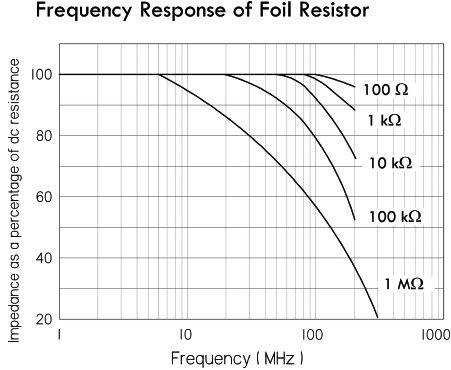
FIGURE 3.56
Even though the definition of the useful frequency range of a resistor is application dependent, typically the useful range of the resistor is the highest frequency at which the impedance differs from the resistance by more than the tolerance of the resistor. Typical reactive values for these special designs are less than 1 μH for a 500-Ω resistor, and less than 0.8-pF capacitance for a 1-MΩ resistor. A typical fast-rise-time resistor has a rise time of 20 ns or less. (Rise time is an associated parameter relating the resistor’s response to a step or pulse input.)
Wirewound resistors are notorious for their poor frequency response due to their internal coil windings. In composition resistors, frequency response also suffers from the capacitances that are formed by the many conducting particles that are held in contact by the dielectric binder. The most stable resistors for high-frequency operations are film resistors. The impedance for film resistors remains constant until around 100 MHz and then decreases at higher frequencies. In general, a resistor with a smaller diameter will have better frequency response. Most high-frequency resistors have a length-to-diameter ratio between 4:1 and 10:1. Manufacturers often supply data sheets that show the frequency response of their resistors. Impedance analyzers can also aid in modeling a resistor’s frequency response.
Noise
Resistors exhibit electrical noise in the form of small ac voltage fluctuations when dc voltage is applied. Noise is extremely difficult to measure accurately and doesn’t affect the value of the resistor but can have a devastating effect on low-level signals, digital amplifiers, high-gain amplifiers, and other applications. Noise in a resistor is a function of the applied voltage, physical dimensions, and materials. The total noise is a sum of Johnson noise, current-flow noise, noise due to cracked bodies, loose end caps, and leads. For variable resistors, noise can also be caused by the brief jumping motion of the wiper as it moves along the resistive element (e.g., wire turns).
There are three main types of resistor noise: thermal, contact, and shot noise. Thermal noise is dependent mainly on temperature, bandwidth, and resistance, while shot noise is dependent on bandwidth and average dc current. Contact noise is dependent upon average dc current, bandwidth, material geometry, and type. The following is a brief summary of the various kinds of resistor noise.
Johnson noise is temperature-dependent thermal noise. Thermal noise is also called “white noise” because the noise level is the same at all frequencies. The magnitude of thermal noise, Vrms, is dependent on the resistance value and the temperature of the resistance due to thermal agitation:
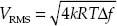
where Vrms is the root-mean-square value of the noise voltage (in volts), K is Boltzmann’s constant (1.38 × 10−23 J/K), R is the resistance (in ohms), T is the temperature (in Kelvin), and Δf is the bandwidth (in hertz) over which the noise energy is measured. For resistors, the thermal noise is equivalent for equal valued resistors, regardless of material type (carbon, metal film, etc.). The only way to reduce thermal noise is to reduce the resistance value. This is why you try to avoid using a 10-MΩ resistor on the input stages of amplifiers.
Current noise varies inversely with frequency and is a function of the current flowing through the resistor and the value of the resistor—see Fig. 3.56. The magnitude of the current noise is directly proportional to the square root of the current. The current noise magnitude is usually expressed by a noise index given as the ratio of the root-mean-square current noise voltage (Vrms) over one decade bandwidth to the average voltage caused by a specified constant current passed through the resistor at a specified hot-spot temperature.
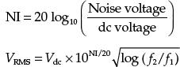
where NI is the noise index, Vdc is the dc voltage drop across the resistor, and f1 and f2 represent the frequency range over which the noise is being computed. Units of noise index are μV/V. At higher frequencies the current noise becomes less dominant compared to Johnson noise.
Contact noise is directly proportional to a constant that depends on resistor material/size and upon the average dc current. In amplifiers, for example, using a larger 2-W carbon-composition resistor will improve performance over that of a ½-W equivalent under the same conditions. The predominant noise in carbon composition, carbon film, metal oxide and metal film is composed of contact noise, which can be very large at low frequencies due to a 1/f frequency characteristic. Wirewound resistors do not have this noise—only resistors made of carbon particles. If no current (ac or dc) flows in the resistor, the noise is equal to the thermal noise. The contact noise increases as the current is increased. This means that for low-noise operation, the dc or ac current should be kept low. The material and geometry of a resistor greatly affects the contact noise, and therefore doubles the power rating of the resistor, which increases the size and area, and will reduce the contact noise generated by the resistor.
Shot noise is dependent upon current—the more average dc current through a resistor, the more noise you get. To reduce this type of noise, dc current levels must be kept low. This is often put into action in the first amplifier stage or in low-level stages such as reverb-recover amps in audio, where it is the most critical. It’s best to use a wirewound or metal-film resistor in these applications, unless you are making a high-frequency amp where inductance of the wirewound resistor comes into play.
The best resistors for low-noise applications are precision resistors. Precision wirewounds tend to be the quietest, having only thermal noise (unless terminations are faulty), but they aren’t readily available in large resistance values and are usually inductive. Precision film resistors also have extremely low noise—you’ll have to consult the manufacturers’ websites to see how noise-free modern film resistors have become. Next down the line comes metal oxide, followed by carbon film, and, last, carbon composition. Composition resistors show some degree of noise due to internal electrical contacts between conducting particles held together with the binder. And remember that, when designing critical circuits, you’ll cut down on contact noise (not applicable to wirewounds) by using the resistor with the largest practical wattage.
Don’t forget potentiometers, which are most commonly carbon composition. They generally have large values (e.g., 1 MΩ for volume control), which make them major sources of noise in an amplifier. For absolute lowest noise, conductive plastic element pots should be used, employing the lowest practical value and largest practical power rating.
Voltage Coefficient of Resistance
Resistance is not always independent of the applied voltage. The voltage coefficient of resistance is the change in resistance per unit change in voltage, expressed as a percentage of the resistance at 10 percent of rated voltage. The voltage coefficient is given by the relationship:
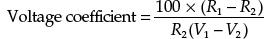
where R1 is the resistance at the rated voltage V1 and R2 is the resistance at 10 percent of rated voltage V2. Voltage coefficient is associated with carbon-composition and carbon-film resistors, and is a function of the resistor’s value and its composition.
Stability
This is defined as the repeatability of resistance of a resistor when measured at a reference temperature and subjected to a variety of operating and environmental conditions over time. Stability is difficult to specify and measure, since it is application dependent. Generally, wirewound and bulk-metal resistor designs are best, while designs using composition resistors are least stable. For highest resistance stability, it’s best to operate critical resistors with limited temperature rise and limited load level. Changes in temperature alternately apply and relieve stresses on the resistive element, thus causing change in resistance. The wider these temperature variations and the more rapid these changes are, the greater the change in resistance. If severe enough, this can literally destroy a resistor. Humidity can also alter the resistance by causing the insulation of the resistor to swell, thus applying pressure to the resistive element.
Reliability
This is the degree of probability that a resistor will perform its desired function. It is typically rated as mean time between failures (MTBF) or failure rate per 1,000 hours of operation. Reliability isn’t usually a critical specification for most general-purpose applications. It often does pop up in critical applications, such as those used by the military.
Temperature Rating
This is the maximum allowable temperature at which the resistor may be used. Often, two temperatures are used—one for full loads up to, say, +85°C derated to no load at +145°C. Temperature range may be specified, for example, from −55°C to +275°C.
There are numerous resistor technologies out there, with new technologies springing up all the time. The major technologies include carbon film, metal film, thick film, thin film, carbon composition, wirewound, and metal oxide. When selecting resistors for an application, you generally specify whether the resistor is to be a precision resistor, semiprecision resistor, general-purpose resistor, or power resistor.
Precision resistors have low voltage and power coefficients and excellent temperature and time stabilities, along with low noise and very low reactance. These resistors are available in metal-film or wire constructions and are typically designed for circuits having very close resistance tolerances on values.
Semiprecision resistors are smaller than precision resistors and are used primarily for current-limiting or voltage-dropping functions. They have long-term temperature stability.
General-purpose resistors are used in circuits that do not require tight resistance tolerances or long-term stability. For general-purpose resistors, initial resistance variations may be in the neighborhood of 5 percent, and the variation in resistance under full-rated power may approach 20 percent. Typically, general-purpose resistors have a high coefficient of resistance and high noise levels. However, good-quality metal film resistors are low cost and often used as general-purpose resistors.
Power resistors are used for power supplies, control circuits, and voltage dividers where operational stability of 5 percent is acceptable. Power resistors are available in wirewound and film construction. Film-type power resistors have the advantage of stability at high frequencies and have higher resistance values than wirewound resistors for a given size.
The following provides finer details highlighting the differences between the various available resistors.
Precision Wirewound
Precision wirewound resistors are very stable resistors manufactured with high tolerances. They are made by winding wire of nickel-chromium alloy onto a ceramic tube covered with a vitreous coating. They are designed to have a very low temperature coefficient of resistance (as low as 3 ppm/°C) and can achieve accuracies up to 0.005 percent. They are usually expected to operate in a temperature range from -55 to 200°C, with a maximum operating temperature of 145°C. Life is generally rated at 10,000 hours at rated temperature and load, though this can increase if operated below rated temperature. The allowable change in resistance under these conditions is about 0.10 percent. In terms of noise, there is little—only contact noise. The power-handling capability is generally low, but high-power versions are available with heat sinks.
Because of the wire-winding nature, these resistors have a component of inductances as well as capacitance associated with them. They tend to be inductive at lower frequencies and somewhat capacitive at higher frequencies, regardless of resistance value. They also have a resonant frequency—with a very low Q value. For this reason, they are unsuitable for operation above 50 kHz—forget about RF applications. Precision wirewounds are not to be used for general-purpose work, but are reserved for high-accuracy dc applications such as high-precision dc measuring equipment and as reference resistors for voltage regulators and decoding networks. (Note: There are certain precision wirewounds listed in manufacturers’ catalogs as “type HS” wirewounds. These resistors have a special winding pattern that can greatly cut down on the inductance of the winds. There are two different types of HS wirewounds: one type has almost zero inductance but greatly increased interwinding capacitance; the other type has low inductance and low capacitance and is well suited for fast-settling amplifiers.)
Once considered the best and most stable resistors, precision wirewounds now have a competitor—precision film resistors, which can match them in most every regard.
Power Wirewound
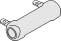
Power wirewound resistors are similar to their precision counterparts but are designed to handle a lot more power. They will handle more power per unit volume than any other resistor. Some of the most powerful are wound similar to heater elements and require some form of cooling (e.g., fans or immersion in liquids such as mineral oil or high-density silicone liquids). These resistors are wound on a winding form, such as a ceramic tube, rod, heavily anodized aluminum, or fiberglass mandrel. The cores on which the windings are made have high heat conductivity (Steatite, Alumina, beryllium oxide, etc.). They come in various shapes—oval, flat, cylindrical—most shapes designed for heat dissipation. Chassis-mount wirewounds are generally cylindrical power resistors wound on a ceramic core molded and pressed into an aluminum heat sink and usually with heat-radiating fins. These are designed to be mounted to metal plates or a chassis to further conduct heat, which results in a rating about five times the normal power rating. Power wirewounds come in a variety of different accuracy and TCR ratings.
Metal Film
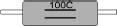
In applications that involve fast rise times (microseconds) or high frequencies (megahertz), metal-film resistors are usually the best. They are also quite cheap and come in small sizes (e.g., surface-mount). Metal-film resistors are often considered the best compromise of all resistors. Once considered less accurate and stable than wirewounds, the technology has greatly improved, with special precision metal-film resistors reaching TC values as low as 20, 10, 5, and even 2 ppm/°C, with accuracies as good as 0.01 percent. They also have much less inductance than wirewounds and are smaller in size and less expensive. When compared to carbon-film resistors, they have lower TCs, lower noise, linearity, and better frequency characteristics and accuracy. They also surpass carbon-film resistors in terms of high-frequency characteristics. Carbon-film resistors do, however, come with higher maximum resistance values.
A metal-film resistor is made from a base metal that is vaporized in a vacuum and deposited on a ceramic rod or wafer. The resistance value is then controlled by careful adjustment of the width, length, and depth of the film. The process is very exacting, resulting in resistors with very tight tolerance values. Metal-film resistors are used extensively in surface-mount technology.
Carbon Film
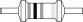
Carbon-film resistors are the most common resistor around. They are made by coating (dipping, rolling, printing, or spraying) a ceramic substrate with a special carbon-film mixture. The thickness and percentage of the carbon mixture roughly determine the resistance. To tailor resistances to precise values the ceramic pieces can be cut to a specific length. Further refinement is accomplished by cutting a spiral trimming groove—see Fig. 3.53. An alternative method of producing carbon film is to mechanically apply carbon dust dispersed in a curable polymeric binder. The material is painted on the substrate in a spiral pattern and cured at a moderately elevated temperature.
Carbon-film resistors, with 1 percent tolerances, are normally manufactured with spiral cuts and have the same kind of voltage-overload limitations as metal-film types. Though these resistors are very popular, they are drifty (TC values around 500 to 800 ppm/°C) and should not be used in circuits where metal-film resistors are intended. In other words, don’t confuse the two when building or replacing blown components. Carbon-film resistors have many of the same characteristics as carbon-composition resistors—such as being noisy and having a voltage coefficient; they outperform carbon-composition resistors in terms of lower TCR ratings and tighter tolerances. Resistor types include general-purpose, through-hole, and surface-mount devices. They also come in specialty types, such as high-power, high-voltage, and fusible. Tolerances of 1 percent or even better can be achieved; however, caution must be used in getting tight tolerances for this type of resistor because the TC, voltage coefficient, and stability may mean that it is good only for that tolerance at the time it was installed. The TC of carbon-film resistors is in the neighborhood of 100 to 200 ppm and is generally negative. Frequency response of carbon-film resistors is among the best—far better than wirewounds, and much better than carbon composition.
Carbon Composition
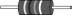
Carbon-composition resistors, though not as popular as they once were, still find use in noncritical applications. They are composed of carbon particles mixed with a binder. The resistance value is varied by controlling the carbon concentration. This mixture is molded into a cylindrical shape and hardened by baking. Leads are attached axially to each end, and the assembly is encapsulated in a protective coating. Composition resistors are economical and exhibit low noise levels for resistances of about 1 MΩ. Composition resistors are usually rated for temperatures in the neighborhood of 70°C for power ranging from  to 2 W. They have end-to-end shunted capacitance that may be noticed at frequencies in the neighborhood of 100 kHz, especially for resistance values above 0.3 MΩ.
to 2 W. They have end-to-end shunted capacitance that may be noticed at frequencies in the neighborhood of 100 kHz, especially for resistance values above 0.3 MΩ.
However, due to poor tolerances—from 5 to 20 percent—carbon-composition resistors should not be used in critical applications. Due to their construction, they generate considerable noise that varies depending on resistance value and the package size (though above 1 MΩ they exhibit low noise).
Though composition resistors have many poor characteristics, they do quite well in overvoltage conditions. Where a metal-film resistor’s spiral gap would be zapped (breakdown causing it to short and destroy itself) during a severe overvoltage condition, a carbon-composition resistor wouldn’t be so wimpy. A carbon-composition resistor uses a large chunk of resistive material that can handle large overloads for a short time without any flashover effects (shorting). So if you’re planning to discharge a high-voltage capacitor through a series resistor where tolerances and such aren’t important, carbon composition isn’t a bad choice. Power-handling capability in relation to physical size is greater than with precision wirewounds but less than with power wirewounds.
Bulk-Metal Foil Resistors
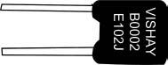
Foil resistors are similar in characteristics to metal films; they have better stability and lower TCRs (approaching those of precision wirewounds), and accuracy about that of metal-film resistors. High-precision versions can achieve tolerances as low as 0.005 percent and TCR values of 0.2 ppm/°C. Their main shining point is their excellent frequency response. Foil resistors are manufactured by rolling the same wire materials as used in precision wirewound resistors to make thin strips of foil. This foil is then bonded to a ceramic substrate and etched to produce the value required. Their main disadvantage is limited high-value resistance values—less than those of metal films.
Filament Resistors
The filament resistors are similar to what’s called “bathtub boat resistors,” except they are not packaged in a ceramic shell (boat). The individual resistive element with the leads already crimped is coated with an insulating material, generally a high-temperature varnish. These are used in applications where tolerance, TCR, and stability are not important but the cost is. The cost of this type is slightly higher than for carbon composition and the electrical characteristics are better.
Thin- and Thick-Film Resistors

Thin-film resistors are made by depositing an extremely thin layer of NiCr resistive film (less than 1 μm) on an aluminum oxide substrate, while using NiCu materials as conducting electrodes. Thin-film technology offers extreme precision and stability (tight tolerances and low TCR values). However, these resistors have relatively limited surge capabilities due to the low mass of the resistive material. Thin-film resistors are designed as small surface-mount devices used in PCB designs and are frequently used as microwave passive and active power components such as microwave power resistors, microwave power terminations, microwave resistive power dividers, and microwave attenuators.
Thick-film resistors, in contrast to thin-film resistors, use a thicker film of RuO2, and have PdAg electrodes. These materials are also mixed with glass-based material to form a paste for printing on the substrate. The thickness of the printing material is usually 12 μm. Thick-film resistors also exhibit decent precision and stability, perhaps approaching those of thin-film resistors; however, they far exceed thin films in terms of maximum surge capacity—one to two orders of magnitude difference. Thick-film resistors come in two-lead packages and in surface-mount form. Some thick-film resistors are designed as power resistors.
Both thin-film and thick-film technologies are constantly improving, and it is difficult to specify all characteristics. Your best bet is to consult manufacturers’ data sheets for more details.
Power-Film Resistors
Power-film resistors are similar in manufacture to their respective metal-film or carbon-film resistors. They are manufactured and rated as power resistors, with power rating being the most important characteristic. Power-film resistors are available in higher maximum values than power wirewound resistors and have a very good frequency response. They are generally used in applications requiring good frequency response and/or higher maximum values. Generally, they are used for power applications, where tolerances are wider, and the temperature ratings are changed so that under full load the resistor will not exceed the maximum design temperature. Also, the physical size of the resistor is larger, and in some cases the core is made from a heat-conductive material attached to a heat sink to dissipate heat more efficiently.
Metal Oxide (Power-Metal-Oxide Film, Flameproof)
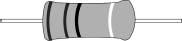
Metal-oxide resistors contain a resistance element formed by the oxidation reaction of a vapor or spray of tin-chloride solution on the heated surface of a glass or ceramic rod. The resulting tin-oxide film is adjusted to value by cutting a helix path through the film. These resistors can sustain high temperatures and electrical overloads, and have moderate-to-precision characteristics. Resistor types in this class include high-power and flameproof axial through-hole and surface-mount types. Axial versions are either blue in color or white. The outer shell of these resistors, which is flameproof like the interior, is also resistant to external heat and humidity. Metal-oxide resistors can be used to replace carbon-composition components in some applications. They are ideal for pulse-power applications. Small-sized power-type metal-oxide resistors come in a 0.5- to 5-W range, with standard tolerances of ±1 to ±5 percent and TCRs around ±300 ppm/°C. Metal-oxide resistors are used in general-purpose voltage dividers, RC timing circuits, and as pullup and pulldown resistor surge applications (e.g., RC snubber circuits, current-limiting circuits, and overload ground lines). They also come with maximum resistance values exceeding those of wirewound resistors. In general, they have decent electrical and mechanical stability and high reliability.
Fuse Resistors (Carbon Composition, Power Oxide, Metal Film)
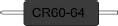
A fuse resistor acts as both a resistor and a fuse. Fuse resistors are designed to open-circuit (fuse) when subjected to a large surge current or fault condition. They are specially spiraled to provide the fusible function with flame-retardant coating. The fusing current is calculated based on the amount of energy required to melt the resistive material (the melt temperature plus the amount of energy required to vaporize the resistive material). These resistors will typically run hotter than a normal precision or power resistor, so that a momentary surge will bring the resistive element up to fusing temperature. Some designs create a hot spot inside the resistor to assist in this fusing. The major unknown when using fuse resistors is the heat transfer of the materials, which can be quite significant for pulses of long duration and is very difficult to calculate. Mounting fuse resistors is critical, since this will affect the fusing current. Many fuse resistors are made to mount in fuse clips for more accurate fusing characteristics. They come in a variety of types, including carbon film, metal film, thin film, and wirewound fusible. Fuse resistors are widely used in constant voltage and overload protection circuits found in battery charges, TV sets, cordless phones, PC/CPU coolers, and so on. Like traditional fuses, they come in fast- and slow-burn types.
Chip Resistor Arrays
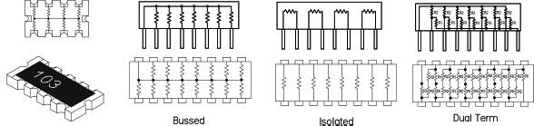
Resistor arrays contain any combination of two or more resistive elements produced on a single substrate. The resistive elements can be constructed using thick-film or thin-film technologies. These arrays come in SIP and DIP packages as well as leadless surface-mountable packages with solderable terminations. Various circuit schematics are available, including isolated resistors, single common and dual common bused resistors. Resistor arrays are used for a wide range of applications where economy of space and weight and placement costs are at a premium. Tolerances are 1 percent and 5 percent, temperature coefficients range from 50 ppm to 200 ppm, and power capabilities compare to individual resistors of similar size.
Cement Resistors
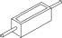
These resistors are designed as power resistors with the added provision of being heat and flame resistant. Typical power ratings range from 1 W to 20 W or more. Tolerances are around 5 percent, with TCR ratings of around 300 ppm/°C.
Zero-Ohm Resistors (Zero-Ohm Jumpers)
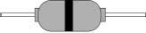
These are really nothing more than a piece of wire used for crossovers, permanent jumpers, or program jumpers (manual switch circuitry) in PCB design. They look like a signal diode with a single black stripe in the center—not to be confused with a diode that has its stripe nearer to one end. The single black stripe is meant to signify a 0-Ω value. Advantages to using these zero-ohm resistors over simple wires include ease of handling for mechanized PCB placement machinery, very low jumper-to-jumper capacitance (suitable for high-speed data lines), small footprint, and overall improvement of PC board performance.
3.5.6 Variable Resistors (Rheostats, Potentiometers, Trimmers)
Variable resistors are often called potentiometers, or “pots” for short, because one very common use for them is as an adjustable voltage divider. For many years they were called “volume controls,” because another very common use was for adjusting the audio volume produced by amplifiers and radio and TV receivers. Another early name for essentially the same component (when it was used simply as a variable resistance) was “rheostat,” meaning a device to set the flow (of current). See Fig. 3.57.
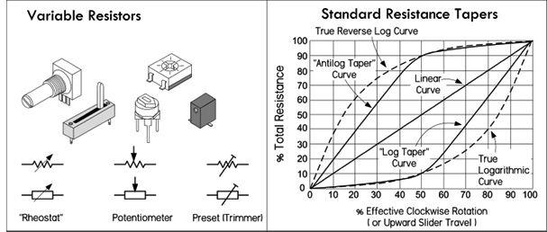
FIGURE 3.57
Pots are made in a variety of physical forms, with different kinds of resistance elements. Some pots are designed to handle frequent manual adjustment via a control knob, while others are designed to be adjusted only occasionally with a screwdriver (or similar tool) for fine-tuning a circuit. The latter type is usually referred to as a preset pot, or simply a trimpot. Most rotary pots made for manual control offer a total rotation of about 270°—¾ of a single turn. Such a limited range, however, can make accurate settings difficult, so multirevolution pots are also available. These pots have a resistance element arranged in a spiral or helix, and the wiper moves along as the control spindle is turned through multiple revolutions (typically, 10 or 20). It is possible to really home in on a resistance value with one of these pots. Multirevolution pots are rather expensive when compared to single-turn pots. For applications that require a logarithmic response (such as audio applications), you can get a pot with a logarithmic taper, as opposed to a linear taper. (Actually most logarithmic pots don’t have a true logarithmic response, as shown in Fig. 3.57. It is difficult to design such a device cheaply; making one with a near-logarithmic response isn’t so expensive.) Reverse logarithmic and antilog pots are also available—these are explained in the next section, on pot characteristics.
Trimpots can be made in circular, multiturn circular, linear-slider, and multiturn linear-slider form. Low-cost varieties generally use an open construction where the resistance element and slider are fully exposed and therefore are prone to contamination by dust and moisture. Higher-quality trimpots are generally housed inside a small plastic case, which is often hermetically sealed. Some multirevolution trimpots use a worm drive system with a circular element, while others use a linear element with a slider driven via a lead-screw. In both cases, the reduction drive is designed to have very low backlash, providing smooth and accurate adjustment.
Pots can be combined together and actuated by using a common spindle. Such pots are referred to as ganged pots. Generally, only two pots are combined this way, but it’s possible to have more. Dual ganged pots with logarithmic taper are often used in amplifier design when dealing with stereo, where you have two distinct signals.
There are various materials used in the construction of pots, such as carbon, Cermet, conductive plastic, and simple wire. Many of the characteristics that apply to fixed resistors also apply to variable resistors of the same nature—see the section on fixed resistor characteristics. Characteristics unique to pots—such as resolution, resistance taper, hop-on/hop-off resistance, and contact resistance—will differ, depending on material makeup. We will discuss these characteristics in a moment.
There are basically two ways a pot can be used in electronics. It can be used to adjust current levels or it can be used to adjust voltage levels. Figure 3.58 shows the basic setups for each scenario.
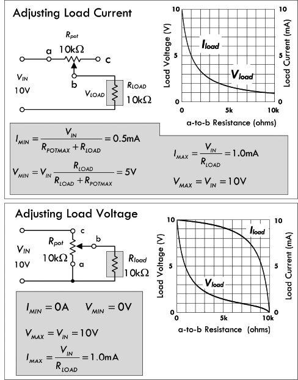
Adjusting load current: Here, a pot’s variable resistance element (a-to-b) is in series with a load. Adjusting manual control of the pot alters the current to the load. The current as a function of pot resistance is:
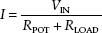
Notice in the graph that the load current follows a curve similar to that of the voltage. The equations in the figure display the maximum and minimum voltages and currents that can be applied across and through the load, where RPOTMAX represents the maximal pot resistance—which in this example is 10 kΩ.
Adjusting load voltage: The second configuration is essentially a variable voltage divider, which is used for adjusting the voltage applied to the load. Notice that in the graph, the load current doesn’t fall as quickly as in the previous configuration. In fact, from 0 to 5 kΩ the current falls about only 1/10 its maximum value. However, from 5 kΩ on, the drop grows significantly.
FIGURE 3.58
3.5.7 Potentiometer Characteristics
Resistance Taper
Pots have either linear or log tapers. Pots with linear tapers have a linear relationship between the wiper position and the resistance; for example, moving the wiper by 10 percent down the resistive element changes the resistance by 10 percent. (See Fig. 3.57.) On the other hand, a potentiometer with a log taper follows a logarithmic resistance change with wiper position, as shown in Fig. 3.57.
Naturally, the main use of common log taper pots is for controls that need to adjust a quantity in an approximate logarithmic fashion—such as for audio. Linear pots are used for most other applications. As an example, if you use a linear pot for a volume control, you’d run into problems; its adjustment grows far too rapidly as the pot is turned up from zero, while the rest of the pot’s rotation doesn’t have much control—the pot’s useful range as a volume control is squeezed into the first 60° or so of rotation, making it hard to set the right level. The log taper pot, on the other hand, is perfect as a volume control, since its logarithmic change with position matches that of the human ear’s logarithmic response to sound levels.
Now, in reality, most modern log taper pots don’t have a true logarithmic characteristic, but instead follow a rough approximation of a logarithmic curve, as shown in Fig. 3.57. The cost of manufacturing a true logarithmic taper is too high; it’s cheaper to coat a strip of material with two resistive elements of different resistive composition. This is quite acceptable as a volume control and is close to a two-slope resistance element, with the transition at about 50 percent rotation. There are indeed pots with true logarithmic response, which are made using a wirewound element on a tapered form or are made with a bulk-metal element with a carefully granulated tapered pattern.
Also shown in Fig. 3.57 are the curves for rotary reverse logarithmic and antilog taper pots, which are virtually the same as true logarithmic and log taper pots but made for the opposite, or anticlockwise, operation. These are not common nowadays, but are still available for special applications.
Resolution
This represents the smallest change in tapping ratio that can be made by moving the pot’s wiper. The resolution of wirewound pots tends to be fairly poor because the element is wound from discrete turns of resistance wire and the wiper contact can usually only slide from one turn to the next. The output of the pot, therefore, tends to vary in small regular steps, each corresponding to the voltage drop in one turn of the elements.
Pots using an etched bulk-metal element tend to have similar problems. However, pots that use a carbon-composition, hot-molded-carbon, or Cermet element tend to have somewhat better resolution because the resistance of their element is more finely graduated. Where high resolution is needed, multiturn pots tend to be more widely used than single-turn pots. It is argued that multiturn pots don’t have superior settability. The next time you need a pot with superior settability, evaluate a multiturn pot and a single-turn pot. Set each one to the desired value, tap the pots with a pencil, and tell which one stays put. Normally, it is expected that a multiturn pot, whether it has a linear or a circular layout, is better, but in reality this is not true—it can be two to four times worse than a single-turn pot because the mechanical layout of a single-turn pot is more stable and balanced.
Contact Resistance
This represents the contact resistance between the pot’s wiper and the resistance element, which has an effect on the resolution. Contact resistance also affects the noise generated by the pot, both when it’s being adjusted and when it’s simply in a fixed setting. The type of contact style and material used in pots affects contact resistance. For example, many carbon-composition pots use a simple wiper stamped from nickel-plated spring steel, with multiple fingers to give parallel wiping contacts in order to reduce contact resistance. Higher-power wirewound pots may use a wiper with a brush made from a single block of carbon, but the block is made with a loading of copper powder to keep the contact resistance as low as possible. High-grade pots with Cermet or bull-metal elements generally have a multifinger spring metal wiper of gold-plated phosphor bronze or steel. Many small trimpots of the cheaper variety have a simple spring metal wiper with a pressed dimple contact that touches the element. This is okay when the trimpot doesn’t get a lot of adjustment, but with frequent adjustment, the contact resistance tends to rise.
Hop-on and Hop-off Resistance
Most pots, whether rotary or linear-slider in design and regardless of type of resistance element, tend to have metal contact strips at the ends of the fixed element. The wiper contact generally touches and rests on these metal strips when it’s at either extreme of its travel. However, when the wiper is moved away from these extremes, it soon hops on or off the actual resistance element. Ideally, the change in resistance that occurs at the hop-on and hop-off should be zero, so that there are no sudden changes when the pot is used as a volume control, for example. However, it isn’t easy to manufacture a pot without this flaw; the best generally keep the hop-on and hop-off resistance below about 1 percent of the total value of the resistance element. This is so low that it usually can’t be detected in most audio and similar applications.
Pot Markings
As well as being marked with a character string indicating the total value of the resistance element—for example, 100 K or 1 M—the case of a pot generally also carried a code letter showing its resistance taper curve. Today most pots are marked according to the simplified taper coding system adopted by Asian component manufacturers:
A = log taper
B = linear taper
However, in older equipment you may come across pots marked according to an earlier taper coding system:
A = linear taper
C = log or audio taper
F = antilog taper
Notice the possible source of confusion!
Don’t exceed your pot’s I and V ratings. If you put a constant voltage between the wiper and one end and turn the resistance way down, you will exceed the maximum wiper current rating and soon damage or destroy the wiper contact. Note that the power rating of most variable resistors is based on the assumption that the power dissipation is uniformly distributed over the entire element. If half of the element is required to dissipate the device’s rated power, the pot may last for a short while. However, if a quarter of the element is required to dissipate the same amount of power, the pot will fail quickly. Also, some trimming pots are not rated to carry any significant dc current through the wiper. This dc current, even a milliamp, could cause electromigration, leading to an open circuit or noisy, unreliable wiper action. Carbon pots are not likely to be degraded by such a failure.
Digital Pots
Digital pots are basically analog variable resistors whose value is set by applying a digital code to their digital input leads. The actual inner circuitry is an array of digitally controlled switches that can add or subtract segments of an integrated array of single polycrystalline resistor elements. Depending on the digital code applied, a few or all the internal integrated resistors can add in series to a desired resultant resistance. Some digital pots are quite advanced, allowing you to store wiper positions in memory. Other control signals may enable the chip, increment or decrement the resistance a given amount, and so on. Digital pots can be used as three-terminal devices or as two-terminal devices. The most common is a three-terminal device, where the digital pot acts as a voltage divider. The two-terminal method is used to make the digital pot a variable current-control device—say, to step the amount of current flow through a diode. These devices are very handy in many types of analog circuits that interface with digital, such as amplifiers where the gain is determined by the digital pot’s resistance in the feedback circuit. Another example is in filter design, where the digital pot replaces the resistance used to set the cutoff frequency. It is worth purchasing a few of these devices once you start playing with microcontrollers.
3.6 Capacitors
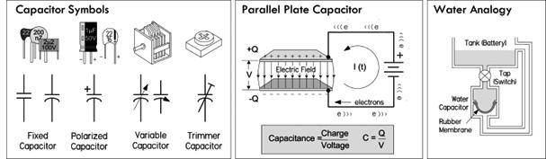
FIGURE 3.59
Capacitors perform a number of functions in electronics. One major function is simple energy storage, where charge from an applied current is stored within the capacitor and later released back into the circuit as useful current. The rate of charging and discharging can be controlled by placing a resistor in series with the capacitor. This effect is often used in high-current discharge circuits (photoflashes, actuators, etc.), as well as small energy backup supplies for low-power memory ICs. It is also used to smooth out power supply ripple, control timing in ICs, and alter the shape of waveforms.
The second major function of a capacitor when placed in series with a signal path is to block dc while allowing ac signal components to pass. A capacitor used in this way is referred to as a dc-blocking or ac-coupling capacitor. At dc, a capacitor’s impedance is ideally infinite—no current flows, no dc levels within a mixed signal are passed. However, if an ac signal is applied, the capacitor’s impedance becomes a finite value, dependent on the frequency of the signal. The higher the frequency, the lower the impedance—ideally. So, in essence, a series capacitor can be used to couple two circuits together without introducing unwanted dc shifts into the next stage, and can control how much of a given frequency signal gets through—it controls the attenuation.
Now, a capacitor placed in parallel with a signal path (i.e., to ground) has an effect opposite that of the coupling capacitor. Instead, it acts as a decoupling capacitor, allowing dc to continue along the path, while diverting high-frequency signal components to ground—the capacitor acts as a low-impedance path to ground. A similar effect, known as bypassing, is used when a capacitor is placed across a particular circuit element to divert unwanted frequencies around it. Decoupling and bypassing become fundamental when removing unwanted random high-frequency ripple and other undesired alterations within a supply voltage (or voltage-critical location) caused by random noise, or sudden current demands generated by accompanying circuit elements. Without decoupling and bypassing, many sensitive circuits, especially those incorporating digital logic ICs, have a tendency to misbehave.
Capacitors are also in passive and active filter networks, LC resonant circuits, RC snubber circuits, and so on. In these applications, it’s the reactive response to change in applied frequency that makes the capacitor useful. We’ll take a closer look at capacitor applications later in this chapter.
When a dc voltage V is applied across the leads of a capacitor, one of its “plates” charges up to a value of Q = CV, while the other plate will charge up to −Q. Here Q is the charge in coulombs (C) and C is the capacitance, or simply the proportional constant that relates Q with V. Capacitance is measured in farads, F (1 F = 1 C/1 V). Once the capacitor is charged, obtaining a voltage nearly equal to the source voltage, it will not pass any dc current—the physical separation between plates prevents this.
Capacitors come with various capacitance values, typically from 1 pF (1 × 10−12F) to 68,000 μF (0.068 F), and with various maximum voltage ratings, from a few volts to thousands of volts, depending on the type of capacitor.
In practical terms, the capacitance simply tells you how much charge can be stored within the capacitor. For example, the circuit in Fig. 3.60 shows how a 4300-μF capacitor holds more charge than a 100-μF capacitor, and, hence, will supply more current to keep the LED lit longer.
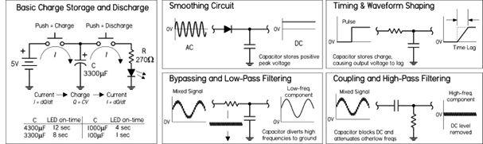
FIGURE 3.60
3.6.2 Capacitors in Parallel
When capacitors are placed in parallel, their capacitances add, just as they do for resistors in series:
Ctot = C1 + C2 + … Cn (Parallel capacitors)
Intuitively, you can think of capacitors in parallel representing one single capacitor with increased plate surface area. It’s important to note that the largest voltage that can be applied safely to a group of capacitors in parallel is limited to the voltage rating of the capacitor with the lowest voltage rating. Both the capacitance and voltage rating are usually included next to the capacitor symbol in schematics, but often the voltage rating is missing; you must figure out the rating based on the expected voltages present at that point in the circuit.
3.6.3 Capacitors in Series
When two or more capacitors are connected in series, the total capacitance is less than that of the smallest capacitor in the group. The equivalent capacitance is calculated similarly to the resistance calculation for resistors in parallel:
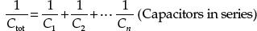
Capacitors may be connected in series to enable the group to withstand a larger voltage than any individual capacitor is rated to withstand (the maximum voltage ratings add). The trade-off is a decrease in total capacitance—though that could be what you intend to do, if you can’t find a capacitor or create a parallel arrangement that gives you the desired capacitance value. Notice in Fig. 3.61 that the voltage does not divide equally among capacitors. The voltage across a single capacitor—say, C2—is a fraction of the total, expressed as (Ctot/C2)Vin. There are circuits that tap the voltage between series capacitors.
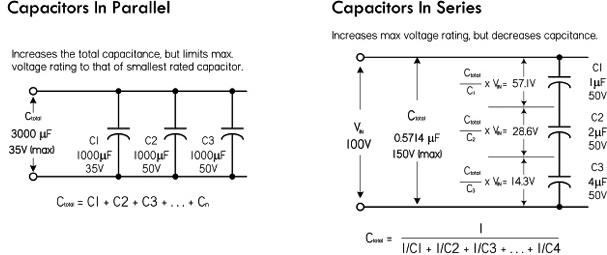
FIGURE 3.61
Use care to ensure that the voltage rating of any capacitor in the group is not exceeded. If you use capacitors in series to withstand larger voltages, it’s a good idea to also connect an equalizing resistor across each capacitor. Use resistors with about 100 Ω per volt of supply voltage, and be sure they have sufficient power-handling capability. With real capacitors, the leakage resistance of the capacitor may have more effect on the voltage division than does the capacitance. A capacitor with a high parallel resistance will have the highest voltage across it. Adding equalizing resistors reduces this effect.
3.6.4 RC Time Constant
When a capacitor is connected to a dc voltage source, it will charge up almost instantaneously. Likewise, a charged capacitor that is shorted with a wire will discharge almost instantaneously. However, with some resistance added, the rate of charge or discharge follows an exponential pattern, as shown in Fig. 3.62. There are numerous applications that use controlled charge and discharge rates, such as timing ICs, oscillators, waveform shapers, and low-discharge power backup circuits.
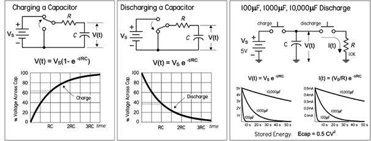
FIGURE 3.62
When charging a capacitor through a resistor, the voltage across the capacitor, with respect to time, is given as:
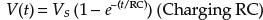
where V(t) is the capacitor voltage in volts at time t, VS is the source voltage, t is the time in seconds after the source voltage is applied, e = 2.718, R is the circuit resistance in ohms, and C is the capacitance in farads. Theoretically, the charging process never really finishes, but eventually the charging current drops to an unmeasurable value. A convention often used is to let t = RC, which makes V(t) = 0.632 V. The RC term is called the time constant of the circuit and is the time in seconds required to charge the capacitor to 63.2 percent of the supply voltage. The lowercase tau (τ) is often used to represent RC: τ = RC. After two time constants (t = 2RC = 2τ), the capacitor charges another 63.2 percent of the difference between the capacitor voltage at one time constant and the supply voltage, for a total change of 86.5 percent. After three time constants, the capacitor reaches 95 percent of the supply voltage, and so on, as illustrated in the graph in Fig. 3.62. After five time constants, a capacitor is considered fully charged, having reached 99.24 percent of the source voltage.
For a discharging capacitor, the following equation is used:
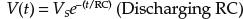
This expression is essentially the inverse of the previous expression for a charging capacitor. After one time constant, the capacitor voltage will have dropped by 63.2 percent from the supply voltage, so it will have reached 37.8 percent of the supply voltage. After five time constants, the capacitor is considered fully discharged; it will have dropped 99.24 percent, or down to 0.76 percent of the supply voltage.
3.6.5 Capacitive Reactance
The amount of charge that can be placed on a capacitor is proportional to the applied voltage and the capacitance (Q = CV). Within an ac circuit, the amount of charge moves back and forth in the circuit every cycle, so the rate of movement of charge (current) is proportional to voltage, capacitance, and frequency. When the effect of capacitance and frequency are considered together, they form a quantity similar to resistance. However, since no actual heat is being generated, the effect is termed capacitive reactance. The unit for reactance is the ohm, just as for resistors, and the formula for calculating the reactance of a capacitor at a particular frequency is given by:
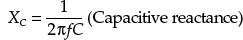
where XC is the capacitive reactance in ohms, f is the frequency in hertz, C is the capacitance in farads, and π = 3.1416. Often, omega (ω) is used in place of 2πf.
It’s important to note that even though the unit of reactance is the ohm, there is no power dissipated in reactance. The energy stored in the capacitor during one portion of the cycle is simply returned to the circuit in the next. In other words, over a complete cycle, the average power is zero. See the graph in Fig. 3.63.
FIGURE 3.63
As an example, the reactance of a 220-pF capacitor at an applied frequency of 10 MHz is:
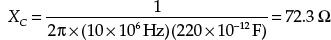
As you can see, the reactance decreases with an increase in frequency and/or an increase in capacitance. The right graph in Fig. 3.63 shows the reactance versus the frequency of a capacitor. Real capacitors don’t follow the graph and equation so precisely, a result of parasitic effects.
3.6.6 Real Capacitors
There are many different types of capacitors, used for various applications. Selecting the right one can be confusing. The main reason for the variety of different capacitors has to do with nonideal characteristics of real capacitors. They contain salient imperfections or parasitic effects that can mess up a particular circuit’s performance. Some capacitors, due to their construction, may have larger resistive or inductive components inherent in their design. Others may act in a nonlinear fashion or may contain dielectric memory. Understanding the effects these parasitics have in each application largely determines which capacitor you select.
The four major nonideal capacitor parameters are leakage (parallel resistance), equivalent series resistance (ESR), equivalent series inductance (ESL), and dielectric absorption (memory). Figure 3.64 shows a schematic model of a real-life capacitor. These parameters, as well as a number of other specifications are explained in the following section.
FIGURE 3.64
3.6.7 Capacitor Specifications
DC Working Voltage (DCWV)
This is the maximum safe limit of dc voltage across a capacitor to prevent dielectric breakdown—a condition that usually results in a puncture in the dielectric offering a low-resistance current path between the two plates. It is not safe to connect capacitors across an ac power line unless they are rated for it. Capacitors with dc ratings may short the line. Several manufacturers make capacitors specifically rated for use across the ac power line. For use with other ac signals, the peak value of ac voltage should not exceed the dc working voltage, unless otherwise specified in component ratings. In other words, the RMS value of ac should be 0.707 times the DCWV value or lower. With many types of capacitors, further derating is required as the operating frequency increases.
Capacitor Leakage (RL)
This is the internal leakage, as shown in the real capacitor model, that trickles off at a rate determined by the RLC time constant. Leakage becomes an important parameter when dealing with ac coupling applications and storage applications, and when capacitors are used in high-impedance circuits. Capacitors notorious for high leakage are electrolytic-type capacitors, on the order of 5 to 20 nA per μF. These capacitors are not suited for storage or high-frequency coupling applications. A better choice would be a film-type capacitor such as polypropylene or polystyrene, which has extremely low leakage current—insulation resistance typically greater than 106 MΩ.
Equivalent Series Resistance (ESR)
This is a mathematical construct, expressed in ohms, that allows all capacitor losses (resistance in capacitor leads, electrodes, dielectric losses, and leakage) at a single specific frequency to be expressed as a single series resistance with the capacitance. A high ESR causes a capacitor to dissipate more power (loss) when high-ac currents are flowing. This can degrade the capacitor. This can also have serious performance consequences at RF and in supply decoupling carrying high ripple currents. However, it is unlikely to have a significant effect in precision high-impedance, low-level analog circuitry. ESR can be calculated using the following equation:
ESR = XC/Q = XC × DF
where XC is the reactance, Q the quality factor, and DF the dissipation factor of the capacitor. Once you know the ESR, you can calculate how much power is lost due to internal heating, assuming a sine wave RMS current is known: P = IRMS2 × ESR. So a capacitor that’s considered lossy presents a large XC and is highly resistive to signal power. Using capacitors with low ESR is important in high-current, high-performance applications, such as power supplies and high-current filter networks. The lower the ESR, the higher the current-carrying ability. A few capacitors with low ESR include both mica and film types.
Equivalent Series Inductance (ESL)
The ESL of a capacitor models the inductance of the capacitor’s leads in series with the equivalent capacitance of the capacitor plates. Like ESR, ESL can also be a serious problem at high frequencies (e.g., RF), even though the precision circuitry itself may be operating at dc or low frequencies. The reason is that the transistors used in the analog circuits may have gain extending up to transition frequencies of hundreds of megahertz, or even several gigahertz, and can amplify resonances involving low values of inductance. This makes it essential that the power supply terminals of such circuits be decoupled properly at high frequency. Electrolytic, paper, or plastic-film capacitors are a poor choice for decoupling at high frequencies; they basically consist of two sheets of foil separated by sheets of plastic or paper dielectric and formed into a roll. This kind of structure has considerable self-inductance and acts more like an inductor than a capacitor at frequencies exceeding just a few megahertz. An appropriate choice for HF decoupling is a monolithic, ceramic-type capacitor, which has very low series inductance. It consists of a multilayer sandwich of metal films and ceramic dielectric, and the films are joined in parallel to bus bars rather than rolled in series. A minor trade-off is that monolithic ceramic capacitors can be microphonic (i.e., sensitive to vibration), and some types may even be self-resonant, with comparatively high Q, because of the low series resistance accompanying their low inductance. Disc ceramic capacitors are often used, but they are often quite inductive, although less expensive. Lead length of a capacitor and its construction determine the capacitor’s self-inductance and, thus, its resonant frequency.
Dissipation Factor (DF) or Tangent Delta (tanδ)
This is the ratio of all loss phenomena (dielectric and resistive) to capacitive reactance, usually expressed as a percent. It can be thought of as the ratio of energy dissipated per cycle to energy stored per cycle. It is also the ratio of the current in phase with the applied voltage to the reactive current. Dissipation factor also turns out to be equivalent to the reciprocal of the capacitor’s figure of merit, or Q, which is also often included in the manufacturer’s data sheet. DF must be given at a specific frequency to be meaningful. A lower DF indicates less power dissipated under otherwise identical conditions.
Dielectric Absorption (DA)
Monolithic ceramic capacitors are excellent for HF decoupling, but they have considerable dielectric absorption, which makes them unsuitable for use as the hold capacitor of a sample-hold amplifier. Dielectric absorption is a hysteresis-like internal charge distribution within the dielectric that causes a capacitor that is quickly discharged and then open-circuited to appear to recover some of its charge. Since the amount of charge recovered is a function of its previous charge, this is, in effect, a charge memory and will cause errors in any sample-hold amplifier where such a capacitor is used as the hold capacitor. DA is given as a percent of charge stored in a capacitor’s dielectric, as opposed to the foil surfaces. It can be approximated by the ratio of the equilibrium value “self-recharge” voltage to the voltage before discharge. Capacitors with low dielectric absorption, typically less than 0.01 percent, suitable for sample-hold applications, include polyester, polypropylene, and Teflon.
Temperature Coefficient (TC)
This represents the change in capacitance with temperature, expressed linearly as parts per million per degree centigrade (ppm/°C), or as a percent change over a specified temperature range. Most film capacitors are not linear; therefore, their TC is usually expressed as a percentage. TC should always be factored in to designs operating at temperature above or below 25°C.
Insulation Resistance (IR)
This is a measure of the resistance to a dc current flow through the capacitor under steady-state conditions. Values for film and ceramic capacitors are usually expressed in megaohm-microfarads for a given design and dielectric. The actual resistance of the capacitor is obtained by dividing the megohm-microfarads by the capacitance.
Quality Factor (Q)
This is the ratio of the energy stored to that dissipated per cycle. It is defined as Q = XC/RESR. In one respect, Q is a figure of merit that defines a circuit component’s ability to store energy compared to the energy it wastes. The rate of heat conversion is generally in proportion to the power and frequency of the applied energy. Energy entering the dielectric, however, is attenuated at a rate proportional to the frequency of the electric field and the loss tangent of the material. Thus, if a capacitor stores 1000 J of energy and dissipates only 2 J in the process, it has a Q of 500.
IRMS
This is the maximum RMS ripple current in amps at a given frequency.
Ipeak
This is the maximum peak current in amps at 25°C for nonrepetitive pulses or where the pulse time off is sufficient to allow cooling so overheating will not result.
Graphs Representing Real Capacitor Characteristics
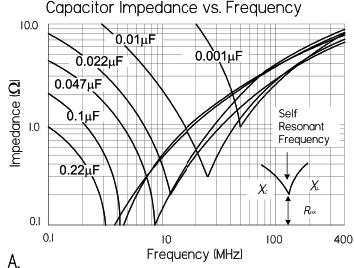
Graph A: Real capacitors aren’t entirely capacitively reactive. They also have inductive and resistive elements (ESR, ESL) that influence their overall impedance. As shown in the graph, as the frequency increases toward the capacitor’s self-resonant frequency, the impedance reaches a minimum, equal to the ESR. Past this frequency, the nonideal inductive reactance characteristic kicks in, leading to an increase in overall impedance. For many applications, the capacitor’s series-resonant frequency sets the upper frequency limit, especially where the phase angle of the capacitor is expected to maintain near 90° voltage/current relationship. The type of construction of the capacitor and lead length affect the self-inductance and thus can shift the resonant frequency. Graphs like these are given by manufacturers and are useful when selecting decoupling capacitors.
Graph B: Shows how the insulation resistance (IR) of various-capacitors changes with frequency.
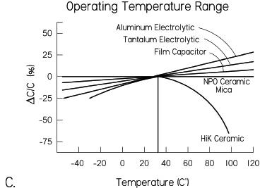
Graph C: Shows the temperature characteristics for various capacitors. Note the extraordinary curve of the HiK ceramic capacitor. Utmost attention must be used when using this type of capacitor when considering temperature-sensitive applications. NPO ceramics have the best temperature characteristic, followed by film, mica, and tantalum.
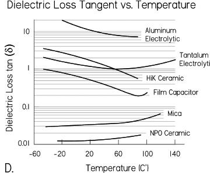
Graph D: Shows the dielectric loss tangent as a function of temperature for various capacitors.
FIGURE 3.65
3.6.8 Types of Capacitors
Here’s an overview of the various capacitors available. More in-depth coverage is provided in Table 3.7.
TABLE 3.7 Capacitor Comparison
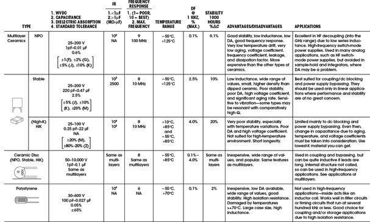
Trimmer (Variable)
These are usually designated as tuning or trimmer capacitors. Trimmer capacitors use ceramic or plastic dielectrics and are typically within the picofarad range. Trimmer capacitors often have their capacitance range printed on them but also may use the following color code: yellow (1 to 5 pF), beige (2 to 10 pF), brown (6 to 20 pF), red (10 to 40 pF), purple (10 to 60 pF), black (12 to 100 pF), and so on. They are often used for fine-tuning sensitive circuits or for compensating as a circuit ages.
Air Core (Variable)
This is an air-spaced capacitor dielectric that is the best approximation to the ideal picture. These capacitors are large when compared to those of the same value using other dielectrics. Their capacitance is very stable over a wide temperature range. Leakage losses are low, and therefore a very high Q can be obtained. To vary the capacitance, the effective surface area of an array of parallel plates is altered via a mechanical turn-knob. Tuning capacitors are used mainly in radio-tuning applications.
Vacuum
These come in both fixed and variable types. They are rated by their maximum working voltages (3 to 60 kV), capacitance (1 to 5000 pF), and currents. Losses are specified as negligible for most applications. There is excellent leakage control. These are used in high-voltage applications such as RF transmitters.
Aluminum Electrolytic
These capacitors have space between their foil plates filled with a chemical paste. When voltage is applied, a chemical reaction forms a layer of insulating material on the foil. Electrolytic capacitors are popular because they provide high capacitance values in small packages at a reasonable cost. They leak badly, have bad tolerances, drift, and have high internal inductance, limiting them to low-frequency applications. Their range is from about 0.1 to 500,000 μF. Aluminum electrolytic capacitors are very popular and are heavily used in almost every kind of circuit, since they are cheap, readily available, and good for filters and storage of large amounts of charge. They will explode, however, if the rated working voltage is exceeded or polarity is reversed. This also means you shouldn’t apply an ac voltage across an electrolytic capacitor. If an ac voltage is superimposed on a dc voltage, make sure that the peak value does not exceed the voltage rating. Aluminum electrolytic capacitors are not suited for high-frequency coupling applications due to poor isolation resistance and internal inductance. Electrolytic capacitors should not be used if the dc potential is well below the capacitor working voltage. Applications include power supply ripple filters, audio coupling, and bypassing. There are also nonpolarized electrolytic capacitors, but these are more expensive and larger than their polarized relatives.
Tantalum Electrolytic
These capacitors are made of tantalum pentoxide. Like electrolytic capacitors, they are polarized, so watch the “+” and “−.” They are smaller, lighter, and more stable; they leak less and have less inductance when compared to aluminum electrolytics, but they tend to be more expensive, have a lower maximum working voltage and capacitance, and are easily prone to damage due to current spikes. For the last reason, tantalum electrolytics are used mostly in analog signal systems that lack high current-spike noise. Tantalum capacitors are not suited for storage or high-frequency coupling applications due to poor isolation resistance and internal inductance. They should not be used if the dc potential is well below the capacitor working voltage. Applications include blocking, bypassing, decoupling, and filtering.
Polyester Film
These capacitors use a thin polyester film as their dielectric. They do not have as high a tolerance as polypropylene capacitors, but they have good temperature stability, and they are popular and cheap. Tolerances are from 5 to 10 percent. These are a good choice for coupling and/or storage applications due to high isolation resistance. They are typically used in moderately high-frequency circuits and audio and oscillator circuits.
Polypropylene Film
This type uses a polypropylene film dielectric and is used mainly when a higher tolerance is needed than what a polyester film capacitor can provide. Tolerance is about 1 percent. This is a good choice for coupling and/or storage applications due to high isolation resistance. This type exhibits stable capacitance for frequencies below 100 kHz. These capacitors are used for noise suppression, blocking, bypassing, coupling, filtering, and timing.
Silver Mica
These are made from depositing a thin layer of silver on a mica dielectric. They are very stable with respect to time (tolerances of 1 percent or less), and have a good temperature coefficient and excellent endurance, but they don’t come in high capacitance values and can be expensive. They are used in resonance circuits and high-frequency filters, due to good stability with temperature. They are also used in high-voltage circuits, because of their good insulation. Their temperature coefficient, in regard to oscillators, isn’t as low as can be achieved by other types, and some silver micas have been known to behave erratically.
Ceramic (Single-Layer)
These capacitors are constructed with materials such as titanium acid barium for the dielectric. Internally, these capacitors are not constructed as a coil, so they have low inductance and are well suited for use in higher-frequency applications. Together with electrolytics, they are the most widely used capacitor around. Ceramic capacitors come in three basic varieties:
Ultrastable or temperature compensating: This type is one of the most highly stable capacitors, made from a mixture of titanates. It has very predictable temperature coefficients (TCs) and, in general, does not have an aging characteristic. The most popular ultrastable ceramic capacitor is the NPO (negative-positive 0 ppm/°C) or COG (EIA designation); others include N030 (SIG) and N150 (P2G). The TC for these capacitors is specified in the capacitance change in parts per million (ppm) per degrees centigrade. To calculate the maximum capacitance change with temperature, the following equation is used. Here we used a 1000-pF NPO capacitor that has reached 35°C, or a change in temperature (ΔT) of 10°C above the standard reference temperature of 25°C. The TC of an NPO capacitor is 0 ± 30 ppm/°C.
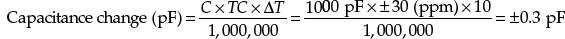
Therefore, a 1000-pF capacitor subjected to a 10°C change in temperature may result in a value as high as 1000.3 pF or as low as 999.7 pF. Ultrastable capacitors are best suited for applications where stability over a wide variation of temperatures and high Q are required. Filter networks and most circuits associated with tuning and timing, as well as various types of resonant circuits, generally require ultrastable capacitors. They are particularly suitable for oscillator construction in order to compensate for frequency drift with temperature. See Table 3.7 for more details.
Semistable: These are not nearly as temperature stable as the ultrastable capacitors; however, they have a higher electrostatic capacity. All semistable capacitors vary in capacitance value under the influence of temperature, operating voltage (both ac and dc), and frequency. These capacitors are best suited for applications where high capacitance values are important, while Q stability over temperature is not a major concern. The TC for semistable capacitors is expressed as a percentage. So a 1000-pF X7R capacitor, which has a TC of ± 15 percent, might be as high as 1150 pF or as low as 850 pF at temperatures above or below 25°C. EIA TC designations are as follows: the first character defines the low-temperature limit (X = −55°C, Y = −30°C, Z = +10°C); the second character defines the high-temperature limit (5 = +85°C, 7 = +125°C); the third character defines the maximum capacitance change in percentage (V = +22, −82 percent, U = +22, −56 percent, T = +22, −33 percent, S = +22 percent, R ±15 percent, P = ±10 percent, F = ±7.5 percent, E = ±4.7 percent). See Table 3.7 and Fig. 3.66 for more details and applications.
FIGURE 3.66
HiK: This variety has a high dielectric constant, or electrostatic capacity, but it has poor stability, poor DA, and a high voltage coefficient, and is sensitive to vibration—some types may be resonant, with comparatively high Q. There is very poor temperature drift, high voltage coefficient of capacitance, high voltage coefficient of dissipation, high frequency coefficient of capacitance, and significant aging rate. These also exhibit low inductance, a wide range of values, small size, and higher density than dipped ceramic. They are best suited for coupling (dc blocking) and power supply bypassing. They should be used only in linear applications where performance and stability are of no great concern.
Multilayer Ceramic
These capacitors were developed to meet the demand for high-density ceramic capacitors. They incorporate multiple printed layers of electrode plates made of thin ceramic sheets. These capacitors are more compact and have, in general, better temperature characteristics than single-layer ceramic capacitors. They are, however, more expensive. Like single-layer ceramic capacitors, they come in ultrastable, stable, and HiK types. See Table 3.7 for more details and applications.
These use a polystyrene dielectric. They are constructed like a coil inside, so they are not suitable for high-frequency applications. They are used extensively within filter circuits and timing applications, and also in coupling and storage applications due to a high isolation resistance. A warning worth noting: polystyrene capacitors exhibit a permanent change in value should they ever be exposed to temperatures much over 70°C; they do not return to their old value upon cooling.
Metallized Film (Polyester and Polypropylene)
These utilize thin conductors or plates that have a distinct size advantage over other types. They are formed by a vacuum-deposition process that laminates a film substrate with a thin aluminum coating measured in angstroms. These capacitors are used where small signal levels (low current/high impedance) and small physical size are primary factors.
Metallized-film capacitors are generally not appropriate for large-signal ac applications. Film and foil types are better suited for this purpose, since they have much thicker plates (foil) that help carry away heat buildups, thus lowering losses, extending life, and reducing effects on DF.
One major advantage of metallized-film capacitors is their self-healing characteristic—a feature resulting from the extreme thinness of the metallized electrode material. Whenever a flaw or weak spot in the dielectric results in a short condition, the stored electrons in the capacitor and the accompanying circuitry will immediately avalanche across the shorted point. This can vaporize the thin metallic electrode. The vaporized electrode forms a reasonably concentric pattern away from the point of the short. As a result of the vaporization, the short condition is removed and the capacitor is again operational. This effect is known as clearing, which is the self-healing process. In nonmetallized capacitors, the short condition results in a catastrophic permanent failure.
Some disadvantages over nonmetallized film capacitors include a slightly higher dissipation factor, slightly lower insulation resistance, lower maximum current, and lower maximum ac-voltage-frequency capability. In general, this type is a good-quality, low-drift, temperature-stable capacitor. Applications include moderately high-frequency, high-current circuits, noise suppression, timing, snubbing, switching power supplies, bypassing, and audio applications.
Supercapacitors (Double-Layer or Ultracapacitors)
These devices store extremely large amounts of charge (from 0.022 to 50 F)—much more than a typical capacitor. This level of energy storage approaches around  that of a low-density battery. However, unlike a battery, the power output can be 10 times greater—a useful feature in high-current pulse applications.
that of a low-density battery. However, unlike a battery, the power output can be 10 times greater—a useful feature in high-current pulse applications.
Supercapacitors consist of two nonreactive porous plates suspended within an electrolyte. A voltage applied to the positive plate attracts the negative ions in the electrolyte, while the voltage on the negative plate attracts the positive ions. This effectively creates two layers of capacitive storage, one where the charges are separated at the positive plate and another where the charges are separated at the negative plate. Conductive rubber membranes contain the electrode and electrolyte material and make contact with a cell. Several cells are stacked in series to achieve the desired voltage ratings. Typical voltage ratings are 3.5 and 5.5, in keeping with their common role as backup capacitors for 3.3 V or 5 V devices.
Battery/Supercapacitor Comparison
A supercapacitor can be charged to any voltage within its voltage rating extremely quickly, and it can be stored totally discharged, while many batteries are damaged by quick charging. The state of charge of a supercapacitor is simply a function of its voltage, while the state of charge of a battery is complex and often unreliable. Though a battery will store more energy than a supercapacitor, a supercapacitor is able to deliver frequent high-power pulses without any detrimental effect, while many batteries experience reduced life under similar conditions.
Supercapacitors can be used as an intermediate power source or a bridge between batteries and conventional capacitors. Many applications benefit from the use of supercapacitors, from those requiring short power pulses to those requiring low-power, long-duration support of critical memory systems—they are capable of maintaining contents of low-dissipation CMOS memory for several months. They are excellent solutions in a number of systems when used alone or combined with other energy sources. Examples include quick-charge applications that can be charged in seconds and then discharge over a few minutes (power tools and toys), short-term support for uninterruptible power systems, where the supercapacitor provides the power for short outages, or as a bridge to a generator or other continuous backup power supply. They can provide load-leveling to an energy-rich, power-poor energy source such as a solar array.
When supercapacitors are strategically placed within battery-powered systems, they can prevent peak power–induced battery stress by supplying the peak power demands for the battery. This often allows a smaller-capacity battery to be used, and it can even extend the overall life span of the battery.
Supercapacitors exhibit high ESR, so they are not recommended for ripple absorption in dc power supply applications. See the “Capacitor Applications” section for example supercapacitor circuits.
Oil-Filled Capacitor
This type is used in high-voltage, high-current applications that generate a lot of heat—the oil cools the capacitor. Applications include induction heating, high-energy pulsing, commutation, equipment bypassing, ignitions, frequency conversion, high-voltage ripple filtering, snubbing, coupling, and spark generation. Voltages range from 1 to 300 kV, and capacitance from around 100 pF to 5000 μF. Typically, they come in large packages.
Reading Capacitor Labels
There are many different schemes used for labeling capacitors. Some use color bands, and some use combinations of numbers and letters. Capacitors may be labeled with their capacitance value, tolerance, temperature coefficient, voltage rating, or some combination of these specifications. Figure 3.66 shows several popular labeling systems.
3.6.9 Capacitor Applications
Coupling and DC Blocking
Coupling capacitors act to pass a range of ac signals from one circuit to another, while preventing any dc components from passing. This is due to the capacitor’s reactance—at dc the reactance is theoretically infinite, but at higher ac frequencies the reactance decreases. Effective coupling requires that the capacitor’s impedance be as low as possible at the frequency range of interest. If not, certain frequencies may become more attenuated than others. The formulas in Fig. 3.67 can be used to find the cutoff frequency, or −3-dB frequency (½ power point), attenuation, and phase shift, assuming ideal conditions and purely resistive load.
FIGURE 3.67 Blocking: A capacitor is used to block or prevent dc voltages from passing from one circuit to another. To block the dc voltage, the capacitor is placed in series with the circuit element.
Coupling: A coupling capacitor is used to couple or link together only the ac signal from one circuit element to another. The capacitor is connected in series between the input and the coupled load. Considering a purely resistive load, the attenuation and cutoff frequency (or -3-dB frequency) can be estimated by means of the formulas to the right. These formulas are based on an ideal capacitor.
Note that in many situations, the load (or coupled stage) to which the capacitor is coupled may be frequency sensitive—its impedance may change with frequency due to inductive and capacitive elements. For example, Fig. 3.70 shows how the input impedance of a transistor amplifier changes with frequency. Since the selection of the coupling capacitor determines which frequencies get attenuated, understanding the changing impedance of the coupled stage is important.
The major characteristics to look at when selecting a coupling capacitor are insulation resistance (IR), ESR, voltage rating, and overall frequency response. Consult Table 3.7 for suggested coupling capacitors. For example, for many audio applications, polypropylene and polyester film and even an electrolytic capacitor may be good choices, but for a high-frequency, high-stability decoupling application, up into the megahertz range, an NPO multilayer ceramic capacitor may be required.
Bypassing
Bypass capacitors are often used to bypass undesired alternating signals (supply ripple, noise, etc.) around a component or group of components to ground. Often the ac is removed (or greatly attenuated) from the ac/dc mixture, leaving the dc free to feed the bypassed component. Figure 3.68 shows the basics behind bypassing.
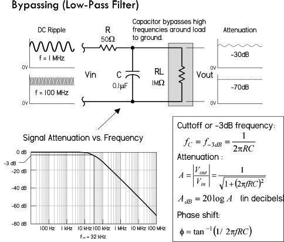
In this circuit, the RC section acts like a low-pass filter, which attenuates high frequencies from reaching the load or circuit element.
As XC < RL, signals bypass RL through C.
As XC > RL, signals pass through RL.
where XC = 1/(2πfC), the capacitor’s reactance. In other words, at high frequencies, XC gets small, so signals tend to be diverted around RL through C.
The graph in the figure shows the attenuation versus frequency response, and the equations tell you how to calculate the cutoff frequency, attenuation, and phase shift.
Note that the R in the circuit in this figure isn’t often physically present as a discrete component. It may represent, say, the inherent resistance present in the power supply line (which is usually much smaller than what’s shown). Though R helps set the frequency response, it can reduce the clamping efficiency.
FIGURE 3.68
As a general rule of thumb, the impedance of the bypass capacitor should be 10 percent of the input impedance of the circuit element.
There are many types of capacitors used for bypassing, from electrolytic to ceramic NPO. The one you choose will depend on the kind of frequency response and stability you require. Major characteristics to consider include insulation resistance (IR), ESL, and ESR. Read on.
Power Supply Decoupling (Bypassing)
Decoupling becomes very important in both digital and analog dc circuits. In these dc circuits, any slight variations in voltage within the circuit may cause improper operation. For example, in Fig. 3.69, noise (random fluctuations in supply voltage) present on the VCC line can cause problems by presenting improper voltage levels to an IC’s sensitive supply lead. (Some ICs will act erratically if this happens.) However, by placing a bypass capacitor in parallel to the IC’s input, the capacitor will bypass the high-frequency noise around the IC to ground, thus maintaining a steady dc voltage. The bypass capacitor acts to decouple the IC from the supply.
FIGURE 3.69 The top circuit uses a 0.1-μF decoupling capacitor to keep the dc supply line free of high-frequency transients. The lower circuit uses three capacitors of different capacitance levels to handle a wide range of transient frequencies.
It’s important to note that variations within the supply voltage line aren’t caused just by random low-level fluctuations. They are also caused by sudden fluctuations in voltage caused by high-current switching action that draws sudden, large amounts of current from the supply line. The more current these devices draw, the bigger the ripple in the supply line. Relay and motor switching is notorious in this regard. (Usually these devices incorporate a snubber diode or some type of local transient suppressor to limit the magnitude of the transient. However, low-level, high-frequency ringing that occurs after switching will often sneak into the line.) Even TTL and CMOS ICs can generate current spikes in the power lines, due to a transient state in which both output transistors are simultaneously on. The resistance between the 5-V supply terminals limits the supply current, and as speed increases this resistance gets smaller, and the transient currents increase to as high as 100 mA. These transient currents usually contain high frequencies due to the fast switching of the logic device. When the current spikes propagate down a power distribution system, they can develop 10- to 100-mV voltage spikes. Even worse, if an entire bus changes states, the effects are additive, resulting in transients as high as 500 mV propagating down the power lines. Such large transients wreak havoc within logic circuits.
It’s important to regard the power supply and the distribution systems (wires, PCB bus, etc.) as nonideal. The power supply contains internal resistance, and the supply distribution system (wires, PCB traces, etc.) contains small amounts of resistance, inductance, and capacitance. Any sudden demands in current from a device attached to the distribution system will thus result in a voltage dip in the supply—use Ohm’s law.
SELECTING AND PLACING DECOUPLING CAPACITORS
What Needs Bypassing: High clock-rate logic circuits and other sensitive analog circuits all require decoupling of the power supplies. As a general rule of thumb, use one 0.1-μF ceramic per digital chip, two 0.1-μF ceramics per analog chip, (one on each supply) to: (where positive and negative supplies are used) and one 1-μF tantalum per every eight ICs or per IC row, though you can often do with less. Also, a good place for bypass capacitors is on power connectors. Anytime power lines are leading off to another board or long wire, it’s a good idea to throw in a bypass capacitor; long wires act like inductive antennas, picking up electrical noise from any magnetic field. A capacitor at both ends of the wire is a good idea—a 0.01-μF or 0.001-μF capacitor connected across the line will often do the trick.
Placement: Capacitor placement is crucial for good high-frequency decoupling. Place capacitors as close as possible to the IC, between power pin and ground pin, and ensure that leads consist of wide PC tracks. Run traces from device to capacitor, then to power planes. Capacitor lead lengths must be kept short (less than 1.5 mm); even a small amount of wire has considerable inductance, which can resonate with the capacitor. Surface-mount capacitors are excellent in this regard, since you can place them almost on top of the power leads, thus eliminating lead inductance.
Size of Capacitor: The frequency of the ripple has a role in choosing the capacitor value. A rule of thumb: the higher the frequency ripple, the smaller the bypass capacitor. In Fig. 3.69, a 0.01- to 0.1-μF capacitor with a self-resonant frequency from around 10 to 100 MHz is used to handle high-frequency transients. If you have very high-frequency components in your circuit, it might be worth using a pair of capacitors in parallel—one large value (say, 0.01 μF) and one small value (say, 100 pF). If there is a complex ripple, several bypass capacitors in parallel may be used, each one targeting a slightly different frequency. For example, in the lower circuit in Fig. 3.69, C1 (1 μF) catches the lower voltage dips that are relatively low in frequency (associated with bus transients), C2 (0.1 μF) the midrange frequencies, and C3 (0.001 μF) the higher frequencies. In general, local decoupling values range from 100 pF to 1 μF. It’s generally not a good idea to place a large 1-μF capacitor on each individual IC, except in critical cases; if there is less than 10 cm of reasonably wide PC track between each IC and the capacitor, it’s possible to share it among several ICs.
Type of Capacitor: The type of capacitor used in decoupling is very important. Avoid capacitors with low ESR, high inductance, and high dissipation factor. For example, aluminum electrolytic capacitors are not a good choice for high-frequency decoupling. However, a 1-μF tantalum electrolytic, as mentioned before, is useful when decoupling at lower frequencies. Monolithic ceramic capacitors, especially surface-mount types, are an excellent choice for high-frequency decoupling due to their low ESL and good frequency response. Polyester and polypropylene capacitors are also good choices, provided you keep lead lengths short. The capacitor you eventually choose will depend on the frequency range you’re trying to eliminate. See Table 3.7 for suggested decoupling capacitors.
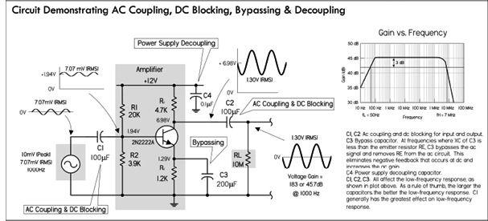
FIGURE 3.70
3.6.10 Timing and Sample and Hold
To change the voltage across a capacitor, it takes a finite amount of time—a characteristic dependent on the capacitance value and any added series resistance. The charging time, as well as the acquired voltage level, can easily be predicted, for example, by using the RC time constant. This phenomenon is put to use in timing circuits, such as oscillators, signal generators, and latch timers. An explanation of how a simple relaxation oscillator works is shown in Fig. 3.71.
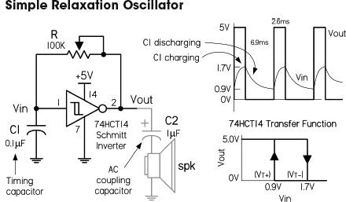
When a capacitor is charged through a resistor, its voltage follows a very predictable curve. By applying the capacitor’s voltage to a level-sensitive input of an IC, the IC will trigger an output response, once the voltage across the capacitor reaches the set trigger level. For example, in the circuit in the figure, a 74HCT14 Schmitt inverter, along with an RC network, comprise a simple squarewave oscillator. Assuming the capacitor is discharged, the inverter’s output is HIGH (+5 V). Current then passes through the resistor and starts collecting as charge within the capacitor. Once the capacitor reaches 1.7 V, the inverter interprets a HIGH input level, and sets the output LOW. C1 then begins discharging, and once its voltage reaches 0.9 V, the inverter interprets a LOW input level, and it again sets the output HIGH. The process continues. The frequency of oscillation is determined by the RC time constant. A smaller capacitance yields a higher frequency—it takes less time to charge up. Many different kinds of capacitors could be used, such as polypropylene, polyester, polystyrene (less than a few hundred kilohertz), and even electrolytic (at lower frequencies).
FIGURE 3.71
In sample-and-hold circuits, a capacitor will acquire an analog voltage level equal to that which is taken during a sample (switch closed). The stored charge within the capacitor holds onto this voltage level until a new sample is taken. See the sample-and-hold circuits in Fig. 3.72.
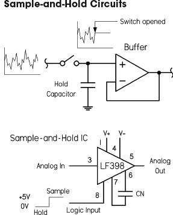
Sample-and-hold circuits are used to sample an analog signal and hold it so that it can be analyzed or converted into, say, a digital signal at one’s leisure. In the first circuit, a switch acts as a sample/hold control. Sampling begins when the switch is closed and ends when the switch is opened. When the switch is opened, the input voltage present at that exact moment will be stored in C. The op amp acts as a buffer, relaying the capacitor’s voltage to the output, but preventing the capacitor from discharging (ideally, no current enters the input of an op amp). The length of the sample voltage that can be held varies, depending on the capacitor’s leakage. Use capacitors with high ESR, low DA, low ESL, and high stability. See text.
The LF398 is a special sample-and-hold IC whose control of sample-and-hold functions is enacted by a digital input signal. An external capacitor is still needed, however, to hold the sample voltage.
FIGURE 3.72
In both timing and sample-and-hold circuits, important capacitor characteristics to look for include high insulation resistance (IR), relatively low ESR, low dielectric absorption (DA), and good capacitance stability. Polystyrene capacitors with very high IR ratings are good in many timing and storage applications, except within timing circuits that exceed a few hundred kilohertz, where ESL becomes a factor. Monolithic ceramic capacitors, though good at high frequencies, have considerably high dielectric absorption, making them unsuitable for sample-and-hold applications. Other capacitors often used in both cases include polypropylene and polyester, both of which have good IR ratings. In low-frequency relaxation-type oscillators and latch timers, electrolytic capacitors are often used, but they should not be used for sample-and-hold circuits; their leakage levels are too high to hold a constant sample voltage.
3.6.11 RC Ripple Filter
The full-wave rectifier dc supply, shown in Fig. 3.73, uses a capacitor to smooth out the rectified dc pulses in order to create a near constant dc output. The capacitor stores charge and delivers it to the load when the rectified or pulsing dc voltage decreases below its peak value. However, as it does this, the voltage drops according to the RLC time constant, until the capacitor recharges during another positive cycle. The resultant output voltage therefore takes on a small ac ripple. Since ripple is usually bad when driving sensitive circuits, it’s important to keep it as low as possible by using a large capacitance value. Figure 3.74 shows how to derive and calculate the ripple voltage, average dc voltage, and ripple factor, given the input frequency, average dc rectified voltage, capacitance, and load resistance.
FIGURE 3.73 Here, a 1000-μF capacitor supply filter is used to reduce the output ripple voltage. With a 100-Ω load, the ripple voltage in this circuit is 0.34 VAC, or 1.17 V peak to peak. The ripple factor (rms ripple voltage divided by average dc voltage) is 0.00251. If we replaced the full-wave bridge with a half-wave rectifier, the ripple voltage would be twice as large. See equations in Fig. 3.74 and Problem 7 at the end of this chapter.
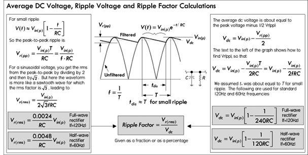
FIGURE 3.74
The ripple factor represents the maximum variation in output voltage (in rms) per the average dc output voltage. A typical and practical ripple factor to shoot for is usually around 0.05. Large capacitance values are desired to keep RF low—typically 1000 μF or more. Increasing the load resistance (decreasing load current) will also keep it down. To achieve higher capacitance levels, place filter capacitors in parallel.
Note that many times you’ll probably include a voltage regulator IC between the filter capacitor and load to combat ac-line surges and maintain a constant output voltage with changing load-current demands. These regulators typically have additional built-in ripple rejection. See the chapter on voltage regulators and power supplies.
Important capacitor characteristics to consider in power supply filtering include ESR, voltage, and ripple current ratings. In most power supplies, the filtering capacitors are electrolytic, since most other types can’t supply the necessary microfarads. In some high-voltage, high-current supplies, oil-filled capacitors may be used.
FIGURE 3.75 Crossover networks are used to provide each speaker in a system a range of frequencies most responsive to a given speaker’s dynamic range. For example, the circuit in the figure is a simple first-order crossover for a system including a tweeter (high-frequency dynamic) and woofer (low-frequency dynamic). To divert only high frequencies to the tweeter, a capacitor is placed in series with the tweeter, where the internal resistance of the tweeter and the capacitance form a high-pass RC circuit. A low-pass filter is used to pass low frequencies to the woofer. It uses an inductor in series with the woofer’s resistance. The response curves and formulas for calculating the cutoff frequency for each filter are provided to the right in the figure. Some popular crossover capacitors include polypropylene, polyester, and metallized-film capacitors.
3.6.12 Arc Suppression
There are two types of discharge that can damage switching contacts and generate noise in the process. The first is glow discharges, caused by the ignition of gases between contacts. These develop at around 320 V with about a 0.0003-in gap, and can be sustained at a much wider gap range. The other type of discharge is arc discharge, occurring at much smaller voltages, about 0.5 MV/cm. Minimum voltages and current are required for arc discharges to be sustained. Contact material also plays a role in sustained arc discharges (see table in Fig. 3.77).
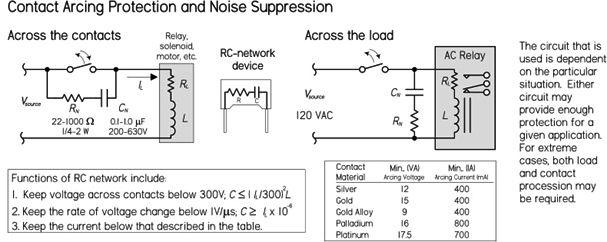
FIGURE 3.77
The main cause of discharge or arcing is the sudden switching off of an inductive load, such as a relay, motor, solenoid, or transformer. These inductive loads do not instantly let go of a current. At the instant a contact opens, the current through the contact does not want to change. When the switch is closed, the resistance is essentially zero, making the voltage zero, too. As the contact opens, the resistance increases, which leads to a high voltage that leads to the arcing or discharge effect across the contacts, usually destructive to contact life—it promotes contact erosion. See Fig. 3.77.
The role of the RC network, or snubber, is to keep the voltage across the contacts below 300 V, while keeping the rate of voltage change below 1 V/μs, as well as keeping the current below the minimum current levels specified for a particular switch contact material. See the table in Fig. 3.77. The capacitor acts to absorb the instantaneous voltage change. When the contacts are closed, the capacitor doesn’t play a role. As the contacts open, any change in voltage is restricted by the capacitor if its value is large enough to restrict the voltage change to less than 1 V/μs. However, a capacitor alone is not a good idea. When the contacts are opened, the capacitor charges up to the supply voltage. As the contacts close, an inrush of current results, limited only by residual resistance, and damage may still result. For this reason, a resistor is connected in series with the capacitor. The voltage across the contacts when opened is equal to the load current × resistance (V = IR). It is recommended that V ≤ supply voltage. In this case, the maximum resistance of the network will be equal to the load resistance.
FIGURE 3.76 With the help of op amps, low-pass, high-pass, bandpass, and notch filters can be created with gain, if desired. Such filters are called active filters, since they have an active element (op amp), as opposed to being passive (no additional power source). The circuits in the figure are low-pass and high-pass active filters suitable for audio applications. The gain and desired cutoff frequency (-3 dB) can be obtained by using the provided formulas to calculate the component values. Polyester, polypropylene film, and metallized capacitors are good in filters at audio ranges.
Usually a 0.1- to 1-μF polypropylene film/foil or metallized-film capacitor with a voltage rating from 200 to 630 V will work for most applications. A carbon 22- to 1000-Ω, ¼- to 2-W capacitor is usually used for the resistance—the size and wattage depend on the load conditions. (In high-voltage applications, oil-filled capacitors with voltage ratings in the kilovolts are often used.) You can avoid building your own RC networks by simply buying prefab versions from the manufacturer.
Note that often shunt resistors, diodes, and gas discharge valves, along with various transient suppressor devices, can also be used to suppress arcing. However, some advantages RC networks have over these devices include bipolar operation suitable for ac application, relay operating time not very much affected, and no current consumption; electromagnetic interference suppression is also achieved (high-frequency EMI is present within the chaotic discharging sparks, but becomes dampened by the RC network).
In some ac circuits it may be necessary to connect the RC network across the load. For example, with ac relays, the relay contacts can also suffer from mechanical and electrical erosion due to arcing when subject to inductive spikes caused by sudden switching. Though diodes are used to suppress transients generated by dc relays, they cannot be used with ac relays due to the ac source’s dual polarity. The leftmost circuit in Fig. 3.77 shows an RC network connected across the ac relay to reduce arcing effects.
3.6.13 Supercapacitor Applications
The extremely high capacitance levels and low leakage rates of supercapacitors make them nifty devices in many low-energy supplies that require recharging in mere seconds. Many interesting solar-power circuits can be made, such as light-seeking robots that use solar energy stored in a supercapacitor to drive small motors. Usually in these circuits special energy-saving modulating circuits are used to pulse the motor in order to conserve energy. Figure 3.78 shows a few simple supercapacitor circuits to get you started.
The circuit at the top in the figure uses a supercapacitor to store charge from a solar panel over time. The larger the capacitance, the more charge that can be stored and the more current that can be delivered to a load. Here, a simple flashing LED (FLED) is used as a nighttime beacon, getting its power from the supercapacitor charged during the day. Assuming the solar panel has fully charged C if C = 0.047 F, then FLED flashes for around 10 min when the light is removed or the switch is opened. If C = 1.5 F, then FLED flashes for hours. There are a number of other cool solar-powered circuits you can make, such as solar-powered engines and backup supplies. Though the circuitry is a bit more complex, they all basically use the same principle of energy storage shown here.
The second circuit is similar to the first, except now there is a phototransistor Q1 that keeps transistor Q2 off if exterior light exists. This prevents the supercapacitor C1 from discharging unless it’s dark. When it’s dark, Q1 turns off and Q2 turns on, providing approximately 10 s of illumination for one 40-mA, 1.5-V lamp. This can be used for short-term nightlights, for mailboxes, or near home entrances. This is a good circuit to avoid the hassle of dealing with dead batteries.
The circuit at the bottom uses a supercapacitor as a power backup for a battery (or a dc power source with current-limiting protection). As with the previous circuit, energy is stored in the supercapacitor; however, now a current-limiting regulator section is added to limit the current delivered to the supercapacitor when the power is first applied to the circuit. Thus, the supercapacitor can charge up without imposing a high current load on the battery. The MOSFET must be rated to dissipate the heat generated during the charging phase. This is a one-off event each time the device is turned on, which lasts only a few seconds, so the MOSFET doesn’t have to be rated to dissipate that amount of power continuously.
FIGURE 3.78
3.6.14 Problems
Problem 1: What do each of the following capacitor labels mean (see Fig. 3.79)?
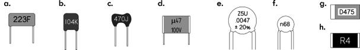
FIGURE 3.79
Answer: (a) 0.022 μF ± 1%; (b) 0.1 μF ± 10%; (c) 47 pF ± 5%; (d) 0.47 μF, 100 V; (e) 0.047 μF ± 20%, −56% to +22% variation from +10°C to +85°C; (f) 0.68 nF; (g) 4.7 μF, 20 V; (h) 0.043 μF.
Problem 2: Find the equivalent capacitance and maximum voltage ratings for the capacitor networks shown in Fig. 3.80. Also, find V1 and V2 within circuit b.
FIGURE 3.80
Answer: (a) 157 μF, 35 V; (b) 0.9 μF, 200 V, V1 = 136 V, V2 = 14 V.
Problem 3: If a 100-μF capacitor in a high-voltage power supply is shunted by a 100-K resistor, what is the minimum time before the capacitor is considered fully discharged when power is turned off?
Answer: 50 s. Hint: After five time constants, a capacitor is considered discharged.
Problem 4: An IC uses an external RC charging network to control its timing. To match its internal circuitry, the IC requires 0.667 of the supply voltage (5 V), or 3.335 V. If the capacitor’s value is 10 μF, what value resistor is required in the RC network to obtain a 5.0-s timing period?
Answer: 500 kΩ. Hint: Use
V(t) = V(1 − e−(t/RC)) = 0.667 V
Problem 5: What is the reactance of a 470-pF capacitor at 7.5 MHz and 15.0 MHz?
Answer:
XC(7.5 MHz) = 45.2 Ω, XC(15 MHz) = 22.5 Ω
Problem 6: Find the f−3dB, the attenuation in decibels AdB, and phase shift ϕ for the given frequencies f1, f2, f3, and f4 of the filter circuits shown in Fig. 3.81.
FIGURE 3.81
Answer: (a) f−3dB = 100,097 Hz; f1 = 1 MHz, AdB = −0.043 dB, ϕ = 5.71°; f2 = 33 kHz, AdB = −10.08 dB, ϕ = 71.7°; f3 = 5 kHz, AdB = −26.04 dB, ϕ = 87.1°; f4 = 100 Hz, AdB = −60.00 dB, ϕ = 89.9°.
(b) f−3dB = 318 Hz; f1 = 10 kHz, AdB = −29.95 dB, ϕ = −88.2°; f2 = 1 kHz, AdB = −10.36 dB, ϕ = −72.3°; f3 = 500 Hz, AdB = −5.40 dB, ϕ = −57.5°; f4 = 100 Hz, AdB = −0.41 dB, ϕ = −17.4°.
Problem 7: For the half-wave rectifier supply shown in Fig. 3.82, find the average dc output voltage, the peak-to-peak ripple voltage, the rms ripple voltage, the ripple factor, and percent ripple.
FIGURE 3.82
Answer: Vdc = 12.92 V, Vr(pp) = 2.35 V, Vr(rms) = 0.68 VAC, ripple factor = 0.0526, percent ripple = 5.26%. See Fig. 3.74.
3.7 Inductors
FIGURE 3.83
The basic role of an inductor is to prevent any sudden changes in current from flowing through it. (Refer to Sec. 2.24 for the details of how this works.) Under ac conditions, an inductor’s impedance (reactance) increases with frequency; an inductor acts to block high-frequency signals while allowing low-frequency signals to pass through it. By selecting the proper inductance value, it is possible to create high-frequency chokes (e.g., RF/EMI chokes) that, when placed in series with power or signal paths, will prevent RF (radiofrequency) or EMI (electromagnetic interference) from entering into the main circuit, where they could introduce undesired hum and false triggering effects.
Filter networks can be created when inductors are used alongside other components such as resistors and capacitors. For example, Fig. 3.84a and b show low-pass and high-pass filters using an inductor as the reactive element. In the low-pass filter, the inductor “chokes” out the high-frequency components, while in the high-pass filter the inductor passes the low-frequency components to ground—high-frequency components are prevented from taking the same path and follow the signal path. Series-resonant (bandpass) and parallel-resonant (notch) filters are shown in Figs. 3.84c and d. Parallel-resonant filters are used in oscillator circuits to eliminate, from an amplifier, any input any frequencies significantly different from the resonant frequency of the LC filter. Such circuits are often used to generate radiofrequency carrier signals for transmitters. Resonant filters also act as tuned circuits used in radio reception.
FIGURE 3.84
The energy storage nature of an inductor can be utilized in switching power supplies. For example, in Fig. 3.84e, a step-up switching regulator or “boost converter” is used to increase a 5-V input voltage to a 12-V output voltage. When the control element (transistor) is on, energy is stored in the inductor. The load, isolated by the diode, is supplied by the charge stored in the capacitor. When the control element is off, the energy stored in the inductor is added to the input voltage. At this time, the inductor supplies load current as well as restoring charge to the capacitor. Other converter configurations include step-down and inverting switching regulators.
A heavily wound, iron core inductor can be used as an electromagnet, capable of attracting steel and other ferromagnetic materials. A solenoid is an electromagnet that has a mechanical mechanism that is pulled when the solenoid is energized by current. The movement mechanism may involve latching or unlatching a door, or opening or closing a valve (i.e., a solenoid valve), or making or breaking switch contacts (as in an electrical relay).
Coupled inductors that share magnetic flux linkage are used to create transformers—devices that utilize mutual inductance to step up or step down ac voltages and currents.
The voltage across an inductor is proportional to the rate at which the current changes. The relationship between voltage and current are described by the following equations:
The proportionality constant L is the inductance, which depends on a number of physical parameters, such as coil shape, number of turns, and core makeup. The basic unit of inductance is the henry, abbreviated H. One henry equals an induced voltage of 1 V when the current is varying at a rate of 1 A/s:
Typical values of inductance for commercial inductors vary from a few nanohenrys for small air core inductors to 50 H for large iron core inductors.
3.7.2 Constructing Inductors
Although constructing a capacitor from scratch is rare and usually unnecessary, constructing an inductor from scratch is quite common. Often it is necessary, since specific inductance values may be difficult to find or overly expensive in commercial units. Even stock inductors often require trimming to match an accurately desired value. Figure 3.85 shows some formulas used to construct inductors. Refer to Sec. 2.24 to see example calculations.
FIGURE 3.85
3.7.3 Inductors in Series and Parallel
When two or more inductors are connected in series, the total inductance is equal to the sum of the individual inductances, provided the coils are sufficiently separated so that coils are not in the magnetic field of one another:
FIGURE 3.86
If inductors are connected in parallel, and if the coils are separated sufficiently, the total inductance is given by:
When only two inductors are in parallel, the formula simplifies to LTOT = (L1 × L2)/(L1 + L2). Refer to Sec. 2.24 to see how these formulas were derived.
3.7.4 RL Time Constant
When a resistor is placed in series with an inductor, the resistance controls the rate at which energy is pumped into the magnetic field of an inductor (or pumped back into the circuit when the field collapses). Figure 3.87 shows energizing and deenergizing RL circuits with corresponding current-versus-time response curves.
FIGURE 3.87
In the energizing RL circuit, the inductor current and voltage as a function of time after the switch is thrown to the up position is given by the following equation:
The time in seconds required for current to build up to 63.2 percent of the maximum value is called the time constant τ, which is equal to L/R. After five time constants, the current is considered to have reached its maximum value.
For a deenergizing RL circuit, things are a bit tricky. However, if we assume when we remove the applied voltage that there is no break in the circuit by moving the discharge to the ground, we can apply the following deenergizing equations:
It takes one time constant τ = L/R for the inductor to lose 63.2 percent of its initial current value. After five time constants, the current is considered to have reached its minimum value.
The deenergizing RL circuit requires special attention. In real life, when the current flow through an inductor is suddenly interrupted—say, by flipping a switch—there can be a very large induced voltage generated as the inductor’s magnetic field rapidly collapses. The magnitude of the induced voltage can be so great that “electron pressure” at the switch contacts overcomes the work function of the metal, and a spark may jump between the contacts. Section 2.24 describes inductive spikes in greater detail.
3.7.5 Inductive Reactance
An inductor has a frequency-sensitive impedance, or inductive reactance, that increases with applied frequency. Unlike resistance, the inductive reactance doesn’t dissipate energy in the form of heat, but temporarily stores energy in a magnetic field and later returns it (or reflects it back) to the source. Inductive reactance has units of ohms, and it increases with frequency according to the following equation:
For example, a 1-H coil with an applied frequency of 60 Hz will provide 377 Ω of reactance, while a 10-μH inductor at 20 MHz will provide 1257 Ω of reactance.
Note that the preceding equation is for an ideal inductor. Real inductors have imperfections, such as internal resistance and capacitance that tend to cause the reactance to deviate from the equation, especially at higher frequencies—see Sec. 2.24.
FIGURE 3.88
There are many different kinds of inductors used for various applications. Selecting the right inductor requires understanding the nonideal characteristics of real inductors. Real inductors have imperfections, such as internal resistance and capacitance, that make them operate slightly differently than the ideal equations predict. Some inductors, due to their construction, may have larger resistive or capacitive components inherent in their design that can cause the inductor to act in a nonlinear fashion when approaching certain frequencies. (See Section 2.24 for details.) Other important differences include current-handling capacity, tolerance, maximum inductance and size, quality factor (Q), saturation characteristics, adjustability, radiated electromagnetic interference (EMI), and environmental endurance.
The following provides important inductor specifications that you’ll find listed in manufacturer data sheets.
3.7.7 Inductor Specifications
Inductance (L): The property of an element that tends to oppose any change in the current flowing through it. The inductance depends on core material, core shape, size, and turn count of the coil. The unit of inductance is the henry (H). Most often, inductances are expressed in microhenries (μH).
1 henry (H) = 106 μF
1 millihenry (mH) = 103 μH
1 nanohenry (nH) = 10−3 μH
Inductive tolerance: Inductive tolerance is the allowed amount of variation from the nominal value specified by the manufacturer. Standard inductance tolerances are typically designated by a tolerance letter: F = ±1%, G = ±2%, H = ±3%, J = ±5%, K = ±10%, L = ±15% (some military products L = ±20%), M = ±20%.
Direct current resistance (DCR): The resistance of the inductor winding measured using dc current. The DCR is most often minimized in the design of an inductor and specified as a maximum rating.
Incremental current: The dc bias current flowing through an inductor that causes an inductance drop of 5 percent from the initial zero dc bias inductance value. This current level indicates where the inductance can be expected to drop significantly if the dc bias current is increased further. This applies mostly to ferrite cores rather than to powdered iron. Powdered iron cores exhibit soft saturation characteristics, which means their inductance drop from higher dc levels is much more gradual than that of ferrite cores. The rate at which the inductance will drop is also a function of the core shape.
Maximum dc current (IDC): The level of continuous direct current that can be passed through an inductor with no damage. The dc current level is based on a maximum temperature rise at the maximum rated ambient temperature. For low-frequency currents, the RMS current can be substituted for the dc-rated current.
Saturation current: The dc bias current flowing through an inductor that causes the inductance to drop by a specified amount from the initial zero dc bias inductance value. Common specified inductance drop percentages are 10 percent and 20 percent. It is useful to use the 10 percent inductance drop value for ferrite cores and 20 percent for powdered iron cores in energy storage applications. The cause of the inductance drop due to the dc bias current is related to the magnetic properties of the core. The core, and some of the space around the core, can store only a given amount of magnetic flux density. Beyond the maximum flux density point, the permeability of the core is reduced; thus, the inductance drops. Core saturation does not apply to air core inductors.
Self-resonant frequency (SRF or f0): The frequency at which the inductor’s distributed capacitance resonates with the inductance. At this frequency, the inductance is equal to the capacitance and they cancel each other. As a consequence, at SRF, the inductor acts as a purely resistive high-impedance element. Also at this frequency, the Q value of the inductor is zero. Distributed capacitance is caused by the turns of wire layered on top of each other and around the core. This capacitance is in parallel to the inductance. At frequencies above SRF, the capacitive reactance of the parallel combination will become the dominant component.
Quality factor (Q): The measure of the relative losses in the inductor. Q is defined as the ratio of inductive reactance to the effective resistance, or XL/RE. Since both XL and RE are functions of frequency, the test frequency must be given when specifying Q. As the self-resonant frequency, Q is zero since the inductance is zero at that point. Ideally, Q = XL/RDC = 2πf L/RDC.
Inductance temperature coefficient: The change in inductance per unit temperature change. Measured under zero bias condition and expressed in parts per million (ppm).
Resistance temperature coefficient: The change in dc wire resistance per unit temperature change. Measured low dc bias (<1 VDC) and expressed in parts per million (ppm).
Curie temperature (TC): The temperature beyond which the core material loses its magnetic properties.
Magnetic saturation flux density (BSAT): A core parameter that indicates the maximum flux the material can be induced to hold. At this value of flux density, all magnetic domains within the core are magnetized and aligned.
Electromagnetic interference (EMI): For inductors, this refers to the amount of magnetic field radiated away from the inductor into space. The field may cause interference with other magnetically sensitive components and may require consideration in circuit design and layout.
3.7.8 Types of Inductors
FIGURE 3.89
There are many different inductors out there. Some inductors are designed for general-purpose filtering, others for RF/EMI filtering, others for high-current choking, and still others for energy storage (in switching power supplies). Typically, manufacturers break down their inductor stock into the following categories: common-mode, general-purpose, high-current, high-frequency, power, and RF chokes. Fundamental specifications for selection include inductance value, dc-rated current, dc resistance, tolerance, and quality factor (Q). Table 3.8 provides a general overview matching inductance characteristics to specified application.
TABLE 3.8 Overview of Typical Applications for Inductors
Table 3.9 provides a selection guide to help determine what kind of inductor to use for a particular application. For in-depth details about specific inductors, check out manufacturers’ websites and read through their data sheets. (Some noteworthy manufacturers: API Delevan, Bourns, C&D Technologies, Fastron, KOA, JW Miller Magnetics, muRata, Pulse, TRIAD, TDK, and VISHAY.)
TABLE 3.9 Inductor Selection Guide